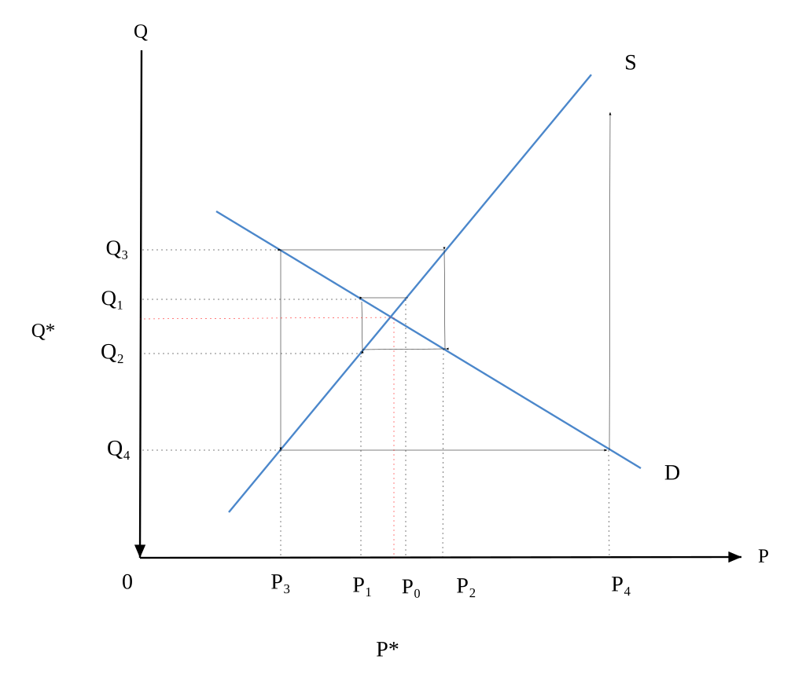
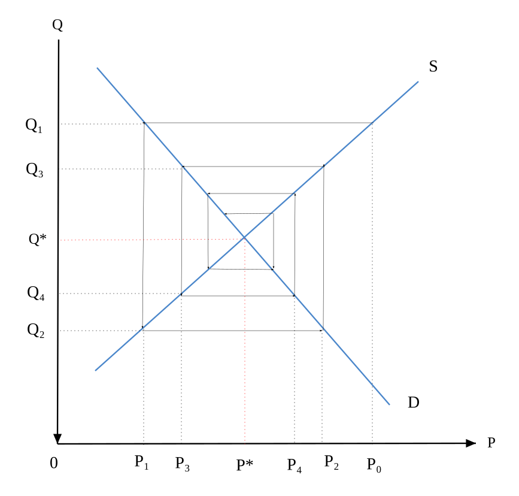
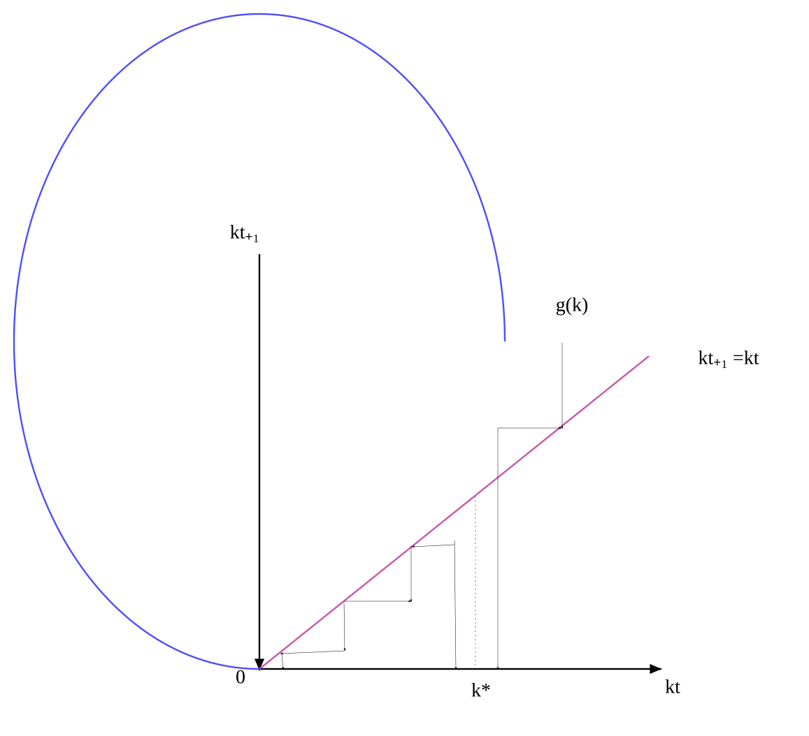
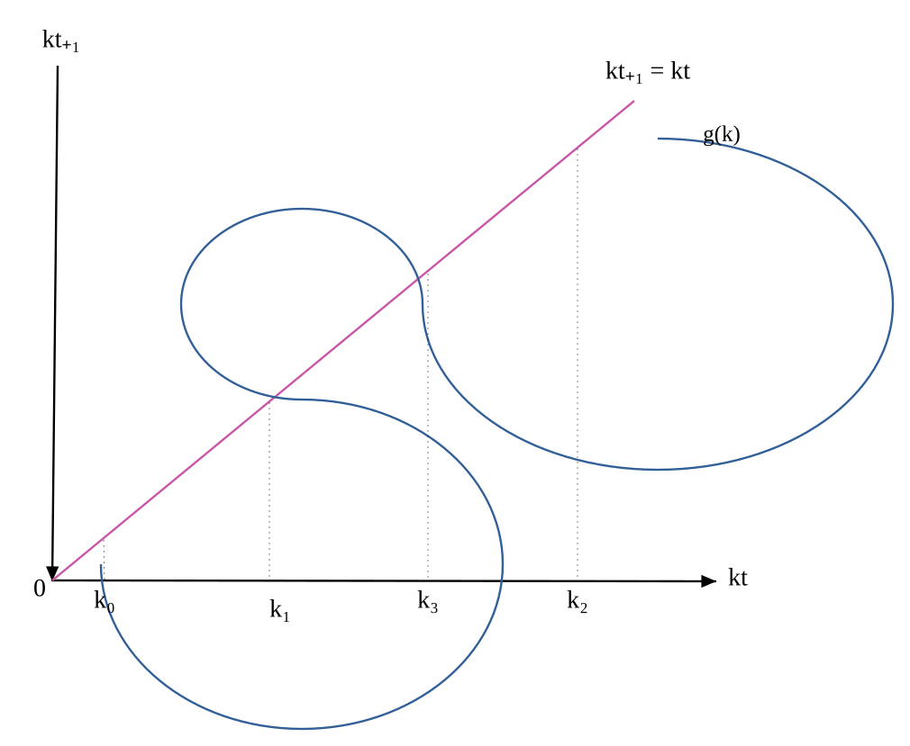
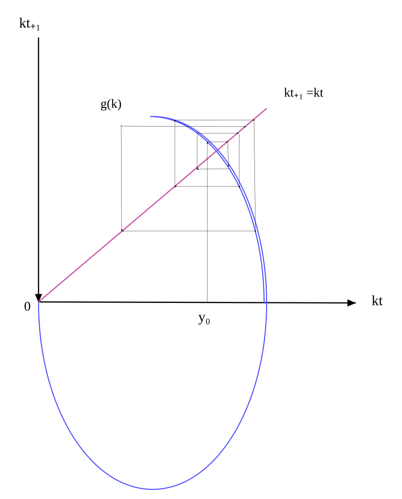
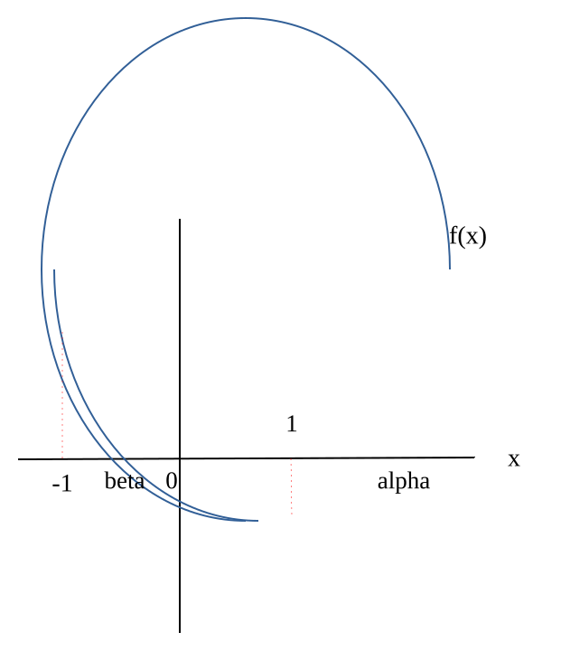
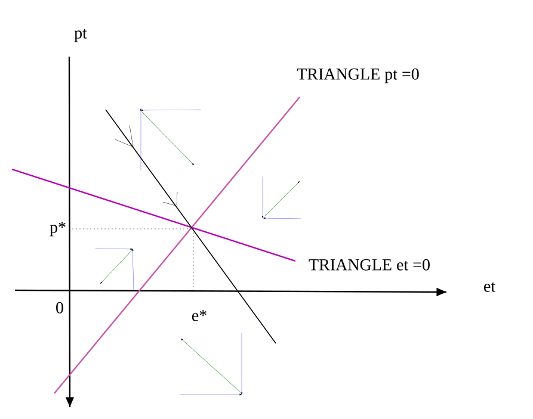
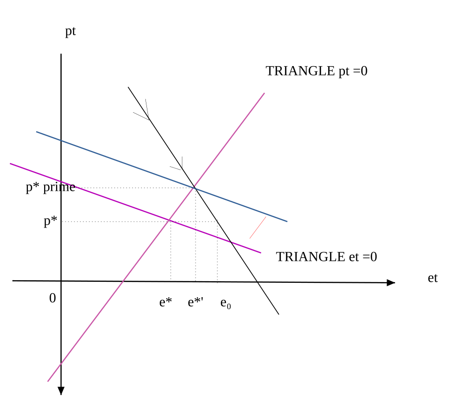

6장. 경제학 응용 II
승수-가속도원리(multiplier-acceleration principle)
케인즈의 「일반이론」이 발표된 이후의 경기순환이론은 크게 실물적 경기순환이론과 화폐적 경기순환이론으로 구분될 수 있다. 실물적 경기순환이론은 샤무엘슨(P.A.Samuelson)과 힉스(J.Hicks)를 중심으로 발전하여 가장 일반적으로 인정되던 승수(乘數)-가속도(加速度)결합형 순환이론을 그 대표로 한다. 여기서 경기변동의 원인으로서는 기업가의 경제에 대한 전망의 변화라든가 다른 외생적 요인에 의한 투자수준의 변화와 같은 수요충격(Demand Shock)과 원자재가격이나 기술수준의 외생적 변화와 같은 공급충격(Supply Shock)이 모두 인정된다.
승수이론이 투자증대로 유발되는 소득증대를 정식화한 데 반해, 가속도원리는 소득증대가 투자증대를 유발시키는 관계를 설명해 주고 있다. 따라서 승수이론과 가속도원리를 결합시키면 소득변화와 투자변화의 상호작용이 가져오는 종합적인 결과를 도출할 수 있게 된다.[48]
가속도 원리란 소득이 늘고 이에 따라 소비가 증가하면, 증가된 소비를 충족시키기 위해 신규 설비의 건설을 위한 새로운 투자가 계속 이루어져야 한다. 투자는 승수효과에 의해 다시 소득을 상승시키고 이는 다시 소비증가를 가져오고 이는 신규투자를 유발하고... 등등, 이와 같이 소득증가가 연쇄적으로 투자를 증가시키는 원리를 가속도원리라 한다. 이때 가속도 효과는 소득(GDP) 증가가 투자에 미치는 영향을 GDP의 변동분으로 측정한다.[49]
모형
\(Y_{t} \,=\,C_{t} +I_{t} +G_{t}\)
\(Y_{t}\) : t기의 국민소득(GDP)
\(C_{t} \,=\, {\overline{C}} + \alpha Y_{t-1}\) , (\({\overline{C}}\)는 기본소비, \(\alpha\)는 한계소비성향, \(0\,<\, \alpha \,<\,1\))
\(I_{t} \;=\, {\overline{I}} + \gamma (C_{t-1} -C_{t-2} )\), (\({\overline{I}}\)는 기본투자, \(\gamma\)는 가속도 조절계수, \(\gamma \,>\,0\))[50]
\(G_{t} \,=\;G\)
가정
자본스톡(K)은 생산수준(Y)에 비례하는 것으로 가정. 즉, 자본/산출량비율 고정, 한계소비성향이 고정이므로 모형에서 \(\gamma\)는 고정이라고 가정
폐쇄경제를 가정(수입, 수출 고려 않함)
정부지출은 분석에서 제외되므로 고정이라고 가정
풀이
\(Y_{t} \,=\, {\overline{C}} + \alpha Y_{t-1} + {\overline{I}} +\, \gamma ( {\overline{C}} + \alpha Y_{t-1} - {\overline{C}} - \alpha Y_{t-2} )+G\)
\(= {\overline{C}} + {\overline{I}} +G+( \alpha + \gamma \alpha )Y_{t-1} - \gamma \alpha Y_{t-2}\)
이는 2차 선형 비동차 차분방정식이다.
이 방정식의 해는 여함수와 특수해로 구성된다.
여함수를 구하기 위해 \(Y_{c} \,=\,k\)라 하면
\(k\,= {\overline{C}} + {\overline{I}} +G+( \alpha + \gamma \alpha )k- \gamma \alpha k\)
∴ \(k=\,Y_{c} = \frac{{\overline{C}} + {\overline{I}} +G}{1- \alpha }\)
여함수는 \(Y_{t}\)가 시간에 관계없이 일정한 장기적 균형상태임을 의미한다. 따라서 장기적인 균형국민소득은 투자의 가속도 부분을 제외한 앞의 케인즈 총수요모형의 결과와 일치한다. 즉, 투자의 가속도효과를 고려해도 장기적인 균형상태인 균형국민총생산은 변하지 않는다는 것을 알 수 있다.
이 차분방정식의 진동, 수렴, 발산 여부는 특수해를 구하면 알 수 있다. 이제 특수해를 구하기 위해 특성방정식을 구하면
\(r^{2} -( \alpha + \gamma \alpha )r+ \gamma \alpha \,=\,0\)
i) 두 근이 실수일 때(\(( \alpha + \gamma \alpha ) ^{2} -4 \gamma \alpha >0\))
\(Y_{t}\)는 무진동
\(r_{1} ,\,r_{2} = \frac{\alpha + \gamma \alpha }{2} \pm \frac{\sqrt {( \alpha + \gamma \alpha ) ^{2} -4 \gamma \alpha }}{2} \,\)
\((1-r_{1} )(1-r_{2} )\,=1-(r_{1} +r_{2} )+r_{1} r_{2} \,=\,1- \alpha (1+ \gamma )+ \gamma \alpha \,=1- \alpha\).........[51]
\(0<1- \alpha <1\) 이므로
\(0<(1-r_{1} )(1-r_{2} )\,<1\)
이 식이 성립하기 위해서는 두 근 \(r_{1} ,\,r_{2}\) 는 다음 두 가지 경우가 존재한다.
case 1) \(0<r_{1} \,<1\;and\;0<r_{2} \,<1\,\)
=> 두 근이 1보다 작으므로 \(Y_{t}\) 는 수렴
\(r_{1} r_{2} = \gamma \alpha \,<1\)
case 2) \(1<r_{1} <2\) and \(1<r_{2} <2\)
=> 두 근이 1보다 크므로 \(Y_{t}\) 는 확산
\(r_{1} r_{2} = \gamma \alpha \,>1\)
\(Y_{t}\) 수렴조건 : \(\gamma \alpha \,<1\)
\(Y_{t}\) 발산조건 : \(\gamma \alpha \,>1\)
ii) 두 근이 허수일 때(\(( \alpha + \gamma \alpha ) ^{2} -4 \gamma \alpha <0\))
\(Y_{t}\)는 진동
\(r_{1} \,,\,r_{2} = \frac{\alpha + \gamma \alpha }{2} \pm i \frac{\sqrt {-( \alpha + \gamma \alpha ) ^{2} +4 \gamma \alpha }}{2} \,\) ...........[52]
\(\left | r_{1} \right | =\, \left | r_{2} \right | = \left | r \right | = \sqrt {( \frac{\alpha + \gamma \alpha }{2} ) ^{2} +( \frac{\sqrt {-( \alpha + \gamma \alpha ) ^{2} +4 \gamma \alpha }}{2} ) ^{2}} = \sqrt {\frac{4 \gamma \alpha }{4}} = \sqrt {\gamma \alpha }\)
\(\gamma \alpha <1\) ⇒ 수렴하면서 진동
\(\gamma \alpha =1\) ⇒ 일정하게 진동
\(\gamma \alpha >1\) ⇒ 증폭하면서 진동
가속도-승수이론의 의미
이 이론은 경기의 순환현상을 수학적으로 제시했다는데 의의가 있다. 항상 그런 것은 아니지만 계수의 어떤 조건이 충족되면 국민소득의 흐름이 진동하는 현상이 발생하므로 경기의 순한현상을 나타낸다고 할 수 있다.
경기는 균형상태에 있던 경제에 일단 이러한 외부적 충격이 주어져 투자가 늘면 생산이 그 이상으로 늘고(승수효과), 생산이 늘면 그 이상으로 투자가 늘면서(가속도효과) 누적적인 확장과정을 가지게 된다. 이러한 확장과정은 계속되다가 완전고용수준에 근접하거나 또는 다른 외부적인 원인 때문에 생산의 증가율이 점차 완만해져, 생산이 더 이상 늘지 않게 되면 생산의 증가에 따라 증가되던 투자(유발투자)가 오히려 감소하여 수축국면으로 접어들게 된다는 것이다. 이 이론은 수학적으로 매우 정교할 뿐 아니라 기존의 경기이론이 흔히 순환의 특정 국면(대개는 확장국면이 끝나고 수축국면으로 이행하는 공황(恐慌)의 순간 즉, 상위전환점)의 설명에 그치는데 비하여 순환의 전과정을 설명하고 있으며 생산의 변화와 그에 따른 유발투자의 변화로 인해 존재하는 전환점의 원인을 수요충격과 공급충격이라는 개념을 사용하여 내생적으로 설명하는 장점이 있다.[53]
부동산시장에도 가속도의 법칙이 있다. 부동산물건을 사려는 사람이 조금만 많아지면 폭발적으로 매입자가 많이 증가한 것처럼 보이고 반대로 물건을 팔려는 사람이 많고 사려는 사람이 없으면 시장은 급속히 냉각되어간다. 한 사람의 매수자가 여러 부동산에 매수의사를 개진할 경우 다수의 부동산에 매수정보가 입력될 것이므로 부동산 매수자가 많은 것 같은 착시현상을 일으킴. 이와 같은 착시현상이 부동산 수요를 폭발적으로 증가시키는 가속도 원리로 작용한다. 이것이 부동산시장을 과열시키는 주요 원인이며 이에 대한 대책이 전속중개제도 이다. 매수자는 하나의 중개업소에만 매수의뢰를 하게 되고 매도자 또한 하나의 중개업소에만 매도의뢰를 하면 된다. 이 경우 매도자와 매수자의 수가 부풀려지지 않는다. 그러나 이는 위의 샤뮤엘슨-힉스 가속도모형과는 다른 개념이다.[54]
가속도-승수이론의 한계
샤뮤엘슨-힉스 가속도모형은 경기순환의 과정에 대한 설명이 너무 단순하고 기계적이며, 외부의 확률적 충격을 고려하고 있지 않은 점. 순환과정에서 화폐부문의 역할이 무시되고 있다는 점 등 때문에 비판을 받아 왔다.
이 이론의 더욱 중요한 약점은 모형의 구성상 한계소비성향과 가속도계수에 따라 경기가 순환하는 것이 아니라 누적적으로 상승 또는 하락하거나 순환적이라 해도 그 진폭이 점점 커지는 성질을 보이는 등 비현실적인 결과를 보인다는 데 있다.
샤무엘슨의 승수-가속도 원리는 경기순환은 어떻게 일어나는가에 대한 기본적 근거를 제시하는 이론일 뿐 현실의 경제문제에 대한 시사점을 얻기에는 너무 단순화되고 비현실적인 모형이라 할 수 있다. 최근에는 이와 같은 모형의 단점을 보완하기 위하여 외부충격에 따른 확률변수의 도입, 가속도계수의 변동성 도입 등 여러 가지 시도가 이루어지고 있다.
거미집이론(cobweb 모형)[55]
수요에 비해 공급의 반응이 지체되어 일어나는 현상으로 가격의 변동에 수요는 즉각적으로 반응하나 공급은 반응에 일정한 시간이 필요하기 때문에 균형가격은 시간차를 고려한 후 결정된다.
생산기간이 짧은 공산품 같은 경우는 비교적 수요에 대한 공급이 즉각적으로 이루어지지만 생산기간이 긴 농산물은 수요에 비해 공급이 늦어지므로 가격 변화에 따라 즉각적인 공급이 어렵고 농산물은 초과공급 혹은 초과수요가 발생하게 된다. 이처럼 가격에 대응하여 공급될 때까지의 시차 때문에 초과 공급과 초과수요가 반복되면서 가격 폭락과 폭등이 주기적으로 나타나게 된다.
농산물 가격과 생산량이 시차를 두고 움직여 나가는 과정을 수요, 공급곡선으로 표시하면 마치 거미집 같은 모양으로 그려지기 때문에 거미집 이론이라 불리운다.
건축시장과 농산물시장은 공급에 시차가 존재한다는 점에서 유사하며, 생산된 상품은 보관이 용이하지 않으므로 일정 기간 이내에 판매되어야 한다는 점에서 유사하다. 부동산의 경우도 전기의 가격이 다음 기의 주택 공급량을 결정하는데 중요한 역할을 하기 때문에 부동산 시장의 경우에도 적용될 수 있다.[56]
가정
- 수요는 현재가격 및 외부의 임의의 충격에 의해 결정.
- 공급은 제품가격 기대치 및 외부의 임의의 충격에 의해 결정.
- 생산된 상품은 보관이 용이하지 않으므로 일정 기간 이내에 판매되어야 한다. (재고는 없고 매기 시장청산이 일어남)[57]
모형
\(D_{t} \,=\,a-bP_{t}\)
\(S_{t} \,=\,c+dP_{t}^{e}\) , \(a,\,b,\,c,\,d\,>\,0\)
\(D_{t}\) : 제품의 t기의 수요
\(S_{t}\) : 제품의 t기의 공급
\(P_{t}\) : 제품의 t기의 가격
\(P_{t}^{e}\) : 제품의 t기의 기대가격
1) 고정기대모형(static expectation model or naive expectation model)
\(P_{t}^{e} \,=\,P_{t-1}\)
즉 공급자는 단순히 전기의 가격만을 고려하여 공급량을 결정
每期 시장청산이 일어나므로 每期 수요= 공급
\(\,a-bP_{t}\)\(\,=\,c+dP_{t}^{e}\) 에서
\(P_{t}^{e} \,=\,P_{t-1}\) 이므로
\(\,a-bP_{t}\)\(\,=\,c+dP_{t-1}\)
즉, \(P_{t} \,=\, \frac{a-c}{b} - \frac{d}{b} P_{t-1}\)
이는 일차 비동차 차분방정식이므로
균형가격은
\(P*\,=\, \frac{a-c}{b} - \frac{d}{b} P*\) ⇒ \(P*\,=\, \frac{\frac{a-c}{b}}{(1+ \frac{d}{b} )} \,=\, \frac{a-c}{b+d}\)
따라서 해는 \(P_{t} \,=\, \frac{a-c}{b+d} +(- \frac{d}{b} ) ^{t} (P_{0} - \frac{a-c}{b+d} )\)
\(- \frac{d}{b} <0\) 이므로 \(P_{t}\)는 균형값 위, 아래(또는 앞 뒤로)로 진동함을 알 수 있다.
\(d>b\;\) | 발산 | 가격에 대한 공급의 탄력성이 수요의 탄력성보다 큰 경우에는 가격과 공급량은 더욱 그 폭을 넓히면서 경로는 발산한다. |
\(d=b\;\) | 순환 | 가격에 대한 공급의 탄력성과 수요의 탄력성이 같은 경우에는 계속 같은 경로를 순환한다. |
\(d<b\;\) | 수렴 | 가격에 대한 수요의 탄력성이 공급의 탄력성보다 클 경우 수렴한다. 균형에 충격이 가해지면 새로운 균형으로 수렴한다.[58] |
a) 발산인 경우[59]
어떤 이유로 0기에 제품의 가격이 균형가격인 \(P*\)에서 이탈하여 \(P_{0}\)에서 가격이 형성됐을 경우 공급자는 1기에 \(Q_{1}\)을 공급한다. 시장에는 \(Q_{1}\) 만큼의 상품이 존재하고 시장균형을 위해서는 공급 = 수요에서 \(Q_{1}\)의 수요량에 대해 \(P_{1}\)으로 가격이 결정된다. 1기에 \(P_{1}\)의 가격을 본 공급자는 2기에 \(Q_{2}\)를 공급하게 되고 이는 수요공급의 법칙에 따라 \(P_{2}\)로 가격이 결정된다. 2기에 \(P_{2}\)의 가격을 본 공급자는 3기에 \(Q_{3}\)를 공급하게 되고 이는 수요공급의 법칙에 따라 \(P_{3}\)로 가격이 결정된다. 3기에 \(P_{3}\)의 가격을 본 공급자는 4기에 \(Q_{4}\)를 공급하게 되고 이는 수요공급의 법칙에 따라 \(P_{4}\)로 가격이 결정된다. 그림에서 보는 바와 같이 균형가격에서의 조그마한 이탈은 다시 균형가격으로 회귀하지 않고 거미집 모양으로 확산되게 된다.

cobweb 모형(발산)
b) 수렴인 경우
어떤 이유로 0기에 제품의 가격이 균형가격인 \(P*\)에서 이탈하여 \(P_{0}\)에서 가격이 형성됐을 경우 공급자는 1기에 \(Q_{1}\)을 공급한다. 시장에는 \(Q_{1}\) 만큼의 상품이 존재하고 시장균형을 위해서는 공급 = 수요에서 \(Q_{1}\)의 수요량에 대해 \(P_{1}\)으로 가격이 결정된다. 1기에 \(P_{1}\)의 가격을 본 공급자는 2기에 \(Q_{2}\)를 공급하게 되고 이는 수요공급의 법칙에 따라 \(P_{2}\)로 가격이 결정된다. 2기에 \(P_{2}\)의 가격을 본 공급자는 3기에 \(Q_{3}\)를 공급하게 되고 이는 수요공급의 법칙에 따라 \(P_{3}\)로 가격이 결정된다. 3기에 \(P_{3}\)의 가격을 본 공급자는 4기에 \(Q_{4}\)를 공급하게 되고 이는 수요공급의 법칙에 따라 \(P_{4}\)로 가격이 결정된다. 이와같은 과정이 반복되어 그림에서 보는 바와 같이 균형가격에서의 이탈은 거미집 모양으로 다시 균형가격으로 수렴하게 된다.

cobweb 모형(수렴)
2) 적응적기대모형(adaptive expectation model)
적응적 기대하에 가격 예측은 전기의 예측오차를 반영하여 다음과 같이 이루어 진다.[60]
\(P_{t}^{e} -P_{t-1}^{e} = \lambda (P_{t-1} -P_{t-1}^{e} )\) , \(0<\lambda <1\)
⇒ \(P_{t}^{e} = \lambda P_{t-1} +(1- \lambda )P_{t-1}^{e}\)..............①
즉 공급자는 전기의 가격과 예측가격의 가중평균을 고려하여 공급량을 결정
시장청산 가정에서
\(\,a-bP_{t}\)\(\,=\,c+dP_{t}^{e}\)
\(\,a-\,c-dP_{t}^{e} \,=\,bP_{t}\)
\(\,P_{t} = \frac{a-c}{b} - \frac{d}{b} P_{t}^{e}\)
①을 대입하면
\(\,P_{t} = \frac{a-c}{b} - \frac{d}{b} ( \lambda P_{t-1} +(1- \lambda )P_{t-1}^{e} )\)...............②
한편, (t-1)기는 \(\,P_{t-1} = \frac{a-c}{b} - \frac{d}{b} P_{t-1}^{e}\)
양변에 (λ-1)를 곱하면
\(\,( \lambda -1)P_{t-1} =( \lambda -1) \frac{a-c}{b} -( \lambda -1) \frac{d}{b} P_{t-1}^{e}\).................③
②와 ③을 더하면
\(\,P_{t} +(1- \lambda )P_{t-1} = \lambda \frac{a-c}{b} - \lambda \frac{d}{b} P_{t-1}\)
⇒ \(\,P_{t} = \lambda \frac{a-c}{b} +(1- \lambda - \lambda \frac{d}{b} )P_{t-1}\)
이 차분방정식의 해는
\(P_{t} \,=\, \frac{a-c}{b+d} +(1- \lambda - \lambda \frac{d}{b} ) ^{t} (P_{0} \,-\, \frac{a-c}{b+d} )\)
\(-1<1- \lambda - \lambda \frac{d}{b} <1\) 이면 \(\lim\limits_{t \to \infty } P_{t} = \frac{a-c}{b+d}\) 이므로 해는 안정적
i) \(1- \lambda - \lambda \frac{d}{b} <1\) 의 성립여부
\(1- \lambda - \lambda \frac{d}{b} <1\) ⇒ \(\lambda + \lambda \frac{d}{b} >0\)
이는 \(\lambda ,\,b,\,d>0\) 이므로 항상 성립
ii) \(-1<1- \lambda - \lambda \frac{d}{b}\) 의 성립여부
\(-1<1- \lambda - \lambda \frac{d}{b}\) ⇒ \(\lambda + \lambda \frac{d}{b} <2\)
⇒ \(\lambda (1+ \frac{d}{b} )<2\) ⇒ \(1+ \frac{d}{b} < \frac{2}{\lambda }\) ⇒ \(\frac{d}{b} < \frac{2}{\lambda } \,-\,1\)
\(0\,<\,\lambda <1\) 이므로
\(\lambda <1\) ⇒ \(\frac{2}{\lambda } >2\) ⇒ \(\frac{2}{\lambda } -1>1\)
\(\frac{d}{b} <1\) 이면 \(\frac{d}{b} <1< \frac{2}{\lambda } -1\)
따라서 \(d\,<\,b\)이면 해는 균형가격에 수렴. 고정기대모형과 같은 결과이다.
\(\frac{d}{b} >1\) 이면 \(\frac{d}{b}\)≶\(\frac{2}{\lambda } -1\)
부호를 판정할 수 없다. 즉 수렴할 수도 발산할 수도 있다. 즉 \(d\,>\,b\) 이더라도 수렴할 수가 있다. 고정기대모형과 다른 결과이다.
거미집이론의 사례
배추 농사가 풍년이 되어 배추 공급과잉이 되면 그 해의 배추농가는 큰 피해를 보며 울며 겨자먹기로 싼값에 배추를 처분하게 됩니다. 그리하여 농부들은 다음해에는 배추 공급을 줄여야 겠다라고 생각을 하게 됩니다. 이렇게 된다면 다음 해에는 배추 공급량이 크게 줄게 되어 가격이 급등하게 되고 이러한 현상은 계속해서 순환하게 됩니다. 이러한 악순환이 계속되게 된다면 소비자는 소비자대로 피해를 보고 공급자도 함께 피해를 보게 된다. 이러한 문제를 극복하기 위해 농가단위 소득안정지원 제도를 도입하고 있습니다. 일명 농가단위 소득안정직불제[61]로 가격의 급등, 급락에 따른 농부들의 피해를 줄여주기 위한 정부의 노력이라고 할 수 있겠습니다.[62]
cobweb 이론의 의미[63]
아래에 예시하는 것처럼 여러 가지 현실성이 결여된 측면이 있다 하더라도 시장가격의 변동에 대한 이론적 배경을 제시.
가격의 변동은 균형가격으로 자연적으로 회귀하는 경우만 존재하는 것이 아니라 경우에 따라서는 균형가격에서 점점 멀어질 수도 있다는 점을 시사
cobweb 이론의 한계
(1) 제품의 가격은 시장에 존재하는 제품의 공급량에만 영향을 받는다.
(2) 생산 수량의 결정은 전기의 가격이라는 변수에 의해서만 결정된다.
(3) 기간 중에는 생산량을 변화시킬 수 없다.
공급함수가 비선형인 경우 거미집 모형
항상소득가설(permanent income hypothesis)
실질소득을 정기수입인 항상소득과 임시수입인 변동소득으로 나누고 소비도 항상소비와 변동소비로 나눌 경우 실질소득 가운데 항상소득의 비율이 클수록 소비성향이 높고 변동소득의 비율이 클수록 저축성향이 높아진다는 이론으로 프리드먼(M．Friedman)이 제창한 가설이다.[64]
항상소득가설은 임시소득이 발생해도 생애전체적 관점에서 보면 소비에 영향을 미칠만한 금액이 아니라는 것을 이론적 배경으로 하고 있다.[65]
The permanent income hypothesis (PIH) is a theory of consumption that was developed by the American economist Milton Friedman. In its simplest form, the hypothesis states that the choices made by consumers regarding their consumption patterns are largely determined by a change in permanent income, rather than change in temporary income. The key conclusion of this theory is that transitory, temporary changes in income have little effect on consumer spending behavior, whereas permanent changes can have large effects on consumer spending behavior[66]
모형
i) \(Y_{t} \,=\,Y_{t}^{p} \,+\,Y_{t}^{\top}\),
\(Y_{t} \,\) : t기의 소득, \(Y_{t}^{p}\) : t기의 항상소득, \(Y_{t}^{\top}\) : t기의 임시소득
t기의 소득은 항상소득과 임시소득으로 구성
ii) \(C_{t} =bY_{t+1}^{e}\), \(\,0\,<\,b\,<\,1\) ....................①
\(C_{t}\) : t기의 항상소비
t기의 소비는 t+1기 항상소득의 예측치에 비례적이다.(소비의 항상소득가설)
iii) \(Y_{t+1}^{e} -Y_{t}^{e} = \alpha (Y_{t} -Y_{t}^{e} )\), \(0\,<\, \alpha \,<\,1\)
⇒ \(Y_{t+1}^{e} = \alpha Y_{t} +(1- \alpha )Y_{t}^{e}\) ...............②
(t+1)기에 대한 항상소득 예측치는 t기의 소득과 t기의 예측소득과의 가중평균으로 결정. (적응적기대가설(adaptive expectation theory))
(풀이)
②는 t기에 대해서도 성립하므로
\(Y_{t}^{e} = \alpha Y_{t-1} +(1- \alpha )Y_{t-1}^{e}\)
이를 ②에 다시 대입하면
\(Y_{t+1}^{e} = \alpha Y_{t} +(1- \alpha )( \alpha Y_{t-1} +(1- \alpha )Y_{t-1}^{e} )\)
\(= \alpha Y_{t} + \alpha (1- \alpha )Y_{t-1} +(1- \alpha ) ^{2} Y_{t-1}^{e}\)
\(= \alpha Y_{t} + \alpha (1- \alpha )Y_{t-1} +(1- \alpha ) ^{2} ( \alpha Y_{t-2} +(1- \alpha )Y_{t-2}^{e} )\)
\(= \alpha Y_{t} + \alpha (1- \alpha )Y_{t-1} + \alpha (1- \alpha ) ^{2} Y_{t-2} +(1- \alpha ) ^{3} Y_{t-2}^{e}\)
이런 식으로 계속 전개하면
\(Y_{t+1}^{e} \,= \alpha \, \sum\limits_{i=0}^{t-1} (1- \alpha ) ^{i} Y_{t-i} +(1- \alpha ) ^{t} Y_{0}\)
이를 ①에 대입하면
\(C_{t} =b \left[ \alpha \, \sum\limits_{i=0}^{t-1} (1- \alpha ) ^{i} Y_{t-i} +(1- \alpha ) ^{t} Y_{0} \right]\)..........③
③은 (t-1)기에도 성립하므로
\(C_{t-1} =b \left[ \alpha \, \sum\limits_{i=1}^{t-1} (1- \alpha ) ^{i-1} Y_{t-i} +(1- \alpha ) ^{t-1} Y_{0} \right]\)
양변에 \((1- \alpha )\)를 곱하면
\((1- \alpha )C_{t-1} =b \left[ \alpha \, \sum\limits_{i=1}^{t-1} (1- \alpha ) ^{i} Y_{t-i} +(1- \alpha ) ^{t} Y_{0} \right]\)..............④
③에서 ④를 빼면
\(C_{t} -(1- \alpha )C_{t-1} \,=\,b \alpha Y_{t}\)
⇒ \(C_{t} =(1- \alpha )C_{t-1} \,+b \alpha Y_{t}\)
t 기의 소비는 전기의 소비를 반영한다.
이는 비동차항이 함수식인 선형 비동차 미분방정식이므로 공식을 적용하면
\(C_{t} =(1- \alpha ) ^{t} C_{0} \,+b \alpha \sum\limits_{i=0}^{t-1} (1- \alpha ) ^{i} Y_{t-i}\)
\(\sum\limits_{i=0}^{t-1} (1- \alpha ) ^{i} Y_{t-i}\) 는 과거 실제소득의 가중평균을 의미한다. 따라서 t기의 항상소비는 과거 항상소득의 가중평균으로 구성된다.[67]
현재로부터 기간이 멀어질수록 반영되는 가중치가 작아진다. 즉 현재소비는 현재소득은 물론 과거소득의 가중평균으로 이루어진다.
케인즈의 승수이론에 따르면 한계소비성향은 \(b\)이고 이에 따른 정부지출 승수효과는 \(\frac{1}{1-b}\)이다. 그러나 적응적 기대모형에서 현재소득에 대한 한계소비성향은 \(b \alpha\)로 더 작은 효과를 가진다.[68] 따라서 확장 재정정책에 의해 현재의 국민소득을 증가시킨다 해도 정부지출 승수효과는 \(\frac{1}{1-b \alpha }\)로 더 작은 효과를 갖는다.
만약 \(\alpha \,=\,0\)라면, 즉 다음 기의 항상소득 예측치가 전기의 항상소득 예측치에만 의존한다면 승수효과는 1로 재정정책은 국민소득에 아무런 영향을 미치지 못한다.
시사점
일시적인 소득의 증가는 상당한 소비의 증가로 이어지지 않으며, 지속적으로 기대되는 항상소득이 소비에 영향을 미친다. 조세감면과 같은 일시적인 소득증가를 일으키는 정부정책은 각 개인의 항상소득에는 영향을 미치지 못해 소비증대로 이어지지 못함. 따라서 항상소득가설에 따르면 정부 지출증대로 총수요를 증가시켜 경기부양을 한다는 케인즈식 총수요관리 정책은 효과가 미미할 것이다.
솔로 성장모형(solow growth model) - 이산형
가정
ㅇ 총생산함수는 자본과 노동으로 이루어진 신고전학파 생산함수를 따른다.[69]
\(Y_{t} \,=\,F(K_{t} ,\,L_{t} )\)
\(Y_{t}\) : t기에 최종재화의 1국 총생산량
\(K_{t}\) : t기의 자본재(capital stock)[70]
\(L_{t}\) : t기의 노동량[71]
생산에는 두 요소 모두 필요하다.
F(K, 0) = F(0, L) = 0
- F는 연속함수이며 2차 미분가능
- 자본과 노동의 한계생산물은 양
\(\frac{\partial F(K,\,L)}{\partial K} \,>\,0\), \(\frac{\partial F(K,\,L)}{\partial L} \,>\,0\)
- 자본과 노동의 한계생산물은 체감
\(\frac{\partial^{2} F(K,\,L)}{\partial K^{2}} \,<\,0\), \(\frac{\partial^{2} F(K,\,L)}{\partial L^{2}} \,<\,0\)
F는 규모의 보수불변, 즉 1차 동차함수
\(F( \lambda K,\, \lambda L)\,=\, \lambda F(K,\,L)\)
F는 inada 조건을 만족[72]
\(\lim\limits_{\scriptscriptstyle {K \to \infty}} \frac{\partial F(K,\,L)}{\partial K} \,=\,0\), \(\lim\limits_{\scriptscriptstyle {L \to \infty}} \frac{\partial F(K,\,L)}{\partial L} \,=\,0\)
\(\lim\limits_{\scriptscriptstyle {K \to 0}} \frac{\partial F(K,\,L)}{\partial K} \,=\, \infty\), \(\lim\limits_{\scriptscriptstyle {L \to 0}} \frac{\partial F(K,\,L)}{\partial L} \,=\, \infty\)
ㅇ 수출, 수입을 고려 않는 폐쇄경제 가정
생산물은 소비와 투자로 사용된다.[73]
\(Y_{t} \,=\,C_{t} \,+\,I_{t}\)
ㅇ 생산물의 일부분은 일정비율로 저축된다.[74] 폐쇄경제에서 저축은 전액 투자로 활용되므로
\(S_{t} \,=\,I_{t} \,=\,sY_{t}\), \(0\,<\,s\,<\,1\)
ㅇ 자본축적은 투자에 의해서 이루어진다. 자본은 매년 일정비율(\(\delta\)) 감가상각된다.
\(K_{t+1} \,=\,(1- \delta )K_{t} \,+\,I_{t} \,=\,(1- \delta )K_{t} \,+\,sY_{t} \,=\,(1- \delta )K_{t} \,+\,sF(K_{t} ,\,L_{t} )\,\).............①
ㅇ 노동력, 인구는 매년 일정비율(\(\mu\))만큼 증가한다.
\(L_{t+1} \,=\,(1+ \mu )L_{t}\)
풀이
①을 \(L_{t+1}\)로 나누고 F가 규모의 보수불변을 이용하면
\(\, \frac{K_{t+1}}{L_{t+1}} \,=\,(1- \delta ) \frac{K_{t}}{L_{t+1}} \,+\, \frac{sL_{t}}{L_{t+1}} F( \frac{K_{t}}{L_{t}} ,\,1)\)
\(\,=\, \frac{1- \delta }{1+ \mu } \frac{K_{t}}{L_{t}} \,+\, \frac{s}{1+ \mu } F( \frac{K_{t}}{L_{t}} ,\,1)\)..............②
\(\, \frac{K_{t}}{L_{t}} \,=\,k_{t}\) (두당 자본), \(\,F( \frac{K_{t}}{L_{t}} ,\,1)\,=\,f(k_{t} )\) (두당 생산물)라 하면 ②는
\(\,k_{t+1} \,=\, \frac{1- \delta }{1+ \mu } k_{t} \,+\, \frac{s}{1+ \mu } f(k_{t} )\,=\,g(k_{t} )\)
이를 Solow 모형의 기본운동법칙(fundamental law of motion)이라 부른다.
이는 비선형 차분방정식이다.
균형에서 \(k_{t+1} \,=\,k_{t} \,=\,k*\)이므로
\(\,k*\,=\, \frac{1- \delta }{1+ \mu } k*\,+\, \frac{s}{1+ \mu } f(k*)\,\)
⇒ \(\, \frac{\mu \,+ \delta }{1+ \mu } k*\,=\, \frac{s}{1+ \mu } f(k*)\,\)
⇒ \(\, \frac{\mu \,+ \delta }{s} \,=\,\frac{f(k*)}{k*}\)
⇒ \(\, {( \mu \,+ \delta )k*} \,=\, {sf(k*)}\)
즉 투자는 감가상각으로 마모되는 자본량과 인구증가로 희석되는 자본량을 충당하기에 필요한 만큼 이루어져야 한다는 의미.[75]
이를 그림으로 표시하면 다음과 같다. 두당 총생산에서 두당 저축을 뺀 금액이 두당 소비다.

해의 존재
\(\, \frac{\mu \,+ \delta }{s} \,=\,\frac{f(k*)}{k*}\)를 만족하는 \(k*\)가 존재한다. 또한 해는 유일하다.
(증명)
이나다 조건에 따라 \(\lim\limits_{k \to 0} {f'(k)\,=\, \infty }\), \(\lim\limits_{k \to \infty } {f ' (k)\,=\,0}\)
\(\lim\limits_{k \to 0} {\frac{f(k)}{k} \,=\, \lim\limits_{k \to 0} {\frac{f'(k)}{1} \,=\, \infty }}\), \(\lim\limits_{k \to \infty } {\frac{f(k)}{k} \,=\, \lim\limits_{k \to \infty } {\frac{f ' (k)}{1} \,=\,0}}\), (∵ 로피탈의 정리)
\(\; \frac{f(k)}{k}\)는 (\(0,\, \infty\))에서 연속이고, \(\, \frac{\mu \,+ \delta }{s} \,\)는 (\(0,\, \infty\)) 사이에 있으므로 중간값 정리에 따라 \(\, \frac{\mu \,+ \delta }{s} \,=\,\frac{f(k*)}{k*}\)를 만족하는 \(k*\)가 존재한다.
\(f(k)\)는 강오목함수이므로 모든 k에서 \(f(k)\,>\,f(0)\,+\,kf'(k)\)..........[76]
⇒ \(f(k)\,>\,kf ' (k)\), (∵f(0) = 0).............[77]
∴ \(\frac{\partial \left( \frac{f(k)}{k} \right)}{\partial k} \,=\, \frac{f'(k)k\,-\,f(k)}{k^{2}} \,<\,0\)
즉 \(\frac{f(k)}{k}\)는 단조감소함수. 따라서 \(\, \frac{\mu \,+ \delta }{s} \,=\,\frac{f(k*)}{k*}\)를 만족시키는 해는 유일하다.
Q.E.D.
해의 수렴
\(f(k)\,>\,kf ' (k)\)
⇒ \(\frac{sf(k)}{k} \,>\,sf ' (k)\)
⇒ \(\mu \,+\, \delta \,>\,sf ' (k*)\), (∵ \(\, \frac{\mu \,+ \delta }{s} \,=\,\frac{f(k*)}{k*}\))
⇒ \(\frac{\mu \,+\, \delta }{1+ \mu } \,>\, \frac{sf ' (k*)}{1+ \mu }\)
한편 \(\,g(k_{t} )\,=\, \frac{1- \delta }{1+ \mu } k_{t} \,+\, \frac{s}{1+ \mu } f(k_{t} )\,\)에서
\(\, \frac{\partial g(k_{t} )}{\partial k_{t}} \,=\, \frac{1- \delta }{1+ \mu } \,+\, \frac{s}{1+ \mu } f ' (k_{t} )\;\)
\(k_{t} \,=\,k*\)에서
\(\left. \, \frac{\partial g(k_{t} )}{\partial k_{t}} \right | _{k_{t} =k*} \,=\, \frac{1- \delta }{1+ \mu } \,+\, \frac{s}{1+ \mu } f ' (k*)\,<\, \frac{1- \delta }{1+ \mu } \,+\, \frac{\mu \,+\, \delta }{1+ \mu } \,=\,1\)
따라서 교차점에서 접선의 기울기가 1보다 작다. 기울기가 1보다 작으므로 (그림)에서 해는 교차점(\(k*\))으로 수렴한다.[78]

경제는 무한정으로 성장하는 것이 아니라 장기적으로 \(k*\)로 수렴한다. 즉 더 이상의 경제성장이 일어나지 않고 정체한다. 이는 한계생산물이 점점 작아진다는 규모에 대한 수익체감 가정 때문이다. 그러나 생산함수가 선형이거나 규모의 수익증가라면 지속적인 경제성장이 일어날 것이다.[79]
\(k*=\, \frac{K*}{L*}\)이므로 정상상태, 즉 균형에서 경제는 매년 인구증가율만큼 증가한다. 따라서 인구증가가 없다면 경제도 성장 없이 정체를 맞게 될 것이다. 이는 인구증가가 경제성장의 중요한 동력임을 의미한다. 현실적으로는 반대의 경우도 존재한다. 인구는 증가하는데 경제는 성장하지 않는 경우이다. 노동인구로 신규 유입되는 젊은 층이 비생산적인 일을 하면서 소득을 올릴 수 있다. 이 경우는 성장의 부가 경제통계에 기록되지 않는 지하경제로 흘러들어가게 된다.
정상상태에서 노동과 자본은 같은 비율로 성장한다. 1차 동차 생산함수를 가정했으므로 생산물도 같은 비율로 증가한다. 이와 같이 노동, 자본, 생산물이 같은 비율로 증가하는 상태를 균등성장경로(balanced growth path)라 한다.[80]
비교정태분석
균형상태의 두당자본을 \(k*(s,\, \delta ,\, \mu )\), 두당생산량을 \(y*(s,\, \delta ,\, \mu )\)라 하면 \(s,\, \delta ,\, \mu\)의 변화에 따른 \(k*(s,\, \delta ,\, \mu )\), \(y*(s,\, \delta ,\, \mu )\)의 변화를 살펴본다.
균형상태에서 \(\, \frac{\mu \,+ \delta }{s} \,=\,\frac{f(k*)}{k*}\) ............①
①의 양변을 s에 대해 미분하면
\(\,- \frac{\mu \,+ \delta }{s^{2}} \,=\, \frac{f'(k*)k*\,-\,f(k*)}{(k*) ^{2}} \frac{\partial k*}{\partial s}\)
∴ \(\frac{\partial k*}{\partial s} \,=\; \frac{(\mu \,+ \delta )(k*) ^{2}}{s^{2} [f(k*)\,-\,f ' (k*)k*\,]} \,>\,0\), (∵ \(\,f(k*)\,>\,f ' (k*)k*\,\))
∴ \(\frac{\partial y*}{\partial s} \,=\, \frac{\partial y*}{\partial k} \frac{\partial k}{\partial s} \,>\,0\), (∵ \(\, \frac{\partial y*}{\partial k} \,>\,0\))
따라서 저축률이 증가할수록 두당 균형자본량과 두당 균형생산량이 증가한다. 이는 (그림)에서 확인할 수 있다. 또한 두당 균형자본량과 두당 균형생산량이 증가하면 균형자본량과 균형생산량이 증가함으로 결과적으로 저축이 증가하면 균형자본량과 균형생산량이 증가한다.
따라서 한 나라가 경제성장을 이루기 위해서는 저축률을 높여야 한다. 그러나 이는 저축이 모두 투자로 활용되어 생산에 기여한다는 전제하에 도출된 이론이다. 저축이 투자로 활용되지 않고 은행 금고에 예치되어 있다면 경제성장으로 유도되지 않을 것이다.

①의 양변을 \(\delta\)에 대해 미분하면
\(\, \frac{1}{s} \,=\, \frac{f ' (k*)k*\,-\,f(k*)}{(k*) ^{2}} \frac{\partial k*}{\partial \delta }\)
∴ \(\frac{\partial k*}{\partial \delta } \,=\; \frac{(k*) ^{2}}{s[\,f ' (k*)k*\,-\,f*k*)\,]} \,<\,0\)
∴ \(\frac{\partial y*}{\partial \delta } \,=\, \frac{\partial y*}{\partial k} \frac{\partial k}{\partial \delta } \,<\,0\)
따라서 감가상각률이 증가할수록 두당 균형자본량과 두당 균형생산량이 감소한다. 이는 (그림)에서 확인할 수 있다. 또한 감가상각률이 증가하면 균형자본량과 균형생산량이 감소한다.

①의 양변을 \(\mu\)에 대해 미분하면
\(\, \frac{1}{s} \,=\, \frac{f ' (k*)k*\,-\,f(k*)}{(k*) ^{2}} \frac{\partial k*}{\partial \mu }\)
∴ \(\frac{\partial k*}{\partial \mu } \,=\; \frac{(k*) ^{2}}{s[\,f ' (k*)k*\,-\,f*k*)\,]} \,<\,0\)
∴ \(\frac{\partial y*}{\partial \mu } \,=\, \frac{\partial y*}{\partial k} \frac{\partial k}{\partial \mu } \,<\,0\)
따라서 인구증가율이 증가할수록 두당 균형자본량과 두당 균형생산량이 감소한다. 이는 (그림)에서 확인할 수 있다.

황금률 정책(golden rule policy)

(그림)에서 소비는 저축률에 따라 변한다. 저축률 s가 1에 접근하면 소비는 점점 줄어들어 저축률 s = 1에서 소비는 0이 되며, 저축률이 0에 접근해도 소비는 점점 줄어 0이 된다. 결국 소비를 극대화하는 저축률은 0과 1 사이에 존재한다. 소비를 극대화하는 저축률을 황금률 저축률이라 하고 이 때의 균형 자본량을 황금률 자본량이라 한다. (그림)에서 \(k_{g}\)는 소비를 극대화하는 균형 두당자본량이 된다.
황금률 저축률은 다음과 같이 구한다.
균형에서 소비는 소득에서 저축을 뺀 금액이다. 또한 소비는 저축률 s의 함수이다.
\(C*(s)\,=\,(1-s)f(k*(s))\)
\(=\,f(k*(s))\,-\,( \mu \,+\, \delta )k*\), (∵\(\, \frac{\mu \,+ \delta }{s} \,=\,\frac{f(k*)}{k*}\))
\(C*(s)\)를 최대화하는 1차 조건은
\(\frac{\partial C*(s)}{\partial s} \,=\,[f ' (k*(s))\,-( \mu \,+\, \delta )] \frac{\partial k*}{\partial s} \,=\,0\)
⇒ \(f ' (k*(s))\,=\, \mu \,+\, \delta \,\), (∵ 비교정태분석에서 \(\frac{\partial k*}{\partial s} \,>\,0\))
즉 추가적인 한계생산물이 감가상각으로 마모되는 비율 + 인구증가로 희석되는 비율과 같아야 한다. 위 식의 결과로 도출되는 \(s_{g}\)가 황금률 저축률이다. 이 때 도출되는 \(k*(s_{g} )\)는 황금률 두당 자본량이 된다.
2차조건은
\(\frac{\partial^{2} C*(s)}{\partial s^{2}} \,=\,[f''(k*(s))] \frac{\partial k*}{\partial s} \,+\,[f ' (k*(s))\,-( \mu \,+\, \delta )] \frac{\partial^{2} k*}{\partial s^{2}} \,\)
\(=\,[f '' (k*(s))] \frac{\partial k*}{\partial s} \,<\,0\), (∵ \(f ' (k*(s))\,=\, \mu \,+\, \delta \,\), \(f '' (k*(s))\,<\,0\), \(\frac{\partial k*}{\partial s} \,>\,0\))
따라서 \(s_{g}\)는 \(C*(s)\)를 최대화시키는 값이다.
균형에서 현재 저축률이 황금률 저축률보다 낮은 상태라면(즉 균형에서 두당 자본이 황금률 두당 자본보다 낮다면) 저축률을 황금률 저축률 만큼 증가시키면 단기적으로는 저축이 느는 만큼 소비가 줄어든다. 황금률 저축률에 가까워지므로 장기적으로는 소비가 증가한다. 현재 소비와 미래 소비간의 어느 것을 선택할 것인가는 정책입안자의 선호에 달려있다.
균형에서 현재 저축률이 황금률 저축률보다 높은 상태라면(즉 균형에서 두당 자본이 황금률 두당 자본보다 높다면) 저축률을 황금률 저축률 만큼 낮추면 단기적으로 저축은 감소하고 따라서 소비는 증가한다. 황금률 저축률에 가까워지므로 장기적으로도 소비는 증가한다. 즉 현재소비, 미래소비 모두 증가한다. 균형에서 현재 저축률이 황금률 저축률보다 높은 상태를 동태적 비효율적(dynamic inefficient)이라 한다. 이 균형 상태는 저축률을 낮춤으로써 현재소비, 미래소비 모두를 증가시킬 수 있기 때문에 파레토 최적이 아니기 때문이다.[81]
기술변수의 추가
생산함수가 다음과 같다면
\(Y_{t} \,=\,H(K_{t} ,\,L_{t} )\,=\,AF(K_{t} ,\,L_{t} )\), A는 기술 또는 생산성을 나타내는 요소[82]
두당자본 생산함수는 \(h(k_{t} )\,=\,Af(k_{t} )\)
이 경우 솔로 기본방정식은
\(\,k_{t+1} \,=\, \frac{1- \delta }{1+ \mu } k_{t} \,+\, \frac{s}{1+ \mu } Af(k_{t} )\)
균형의 조건은
\(\, \frac{\mu \,+ \delta }{s} \,=\, \frac{h(k*)}{k*}\)
⇒ \(\, \frac{\mu \,+ \delta }{As} \,=\, \frac{f(k*)}{k*}\).............①
생산성 변화에 따른 해의 변화는
①의 양변을 A에 대해 미분하면
\(\,- \frac{\mu \,+ \delta }{A^{2} s} \,=\, \frac{f ' (k*)k*\,-\,f(k*)}{(k*) ^{2}} \frac{\partial k*}{\partial A}\)
∴ \(\frac{\partial k*}{\partial A} \,=\; \frac{( \mu \,+ \delta )(k*) ^{2}}{sA^{2} [f(k*)\,-\,f ' (k*)k*\,]} \,>\,0\), (∵ \(\,f(k*)\,>\,f ' (k*)k*\,\))
∴ \(\frac{\partial y*}{\partial A} \,=\, \frac{\partial y*}{\partial k} \frac{\partial k}{\partial A} \,>\,0\), (∵ \(\, \frac{\partial y*}{\partial k} \,>\,0\))
생산성이 증가할수록 두당 균형자본량과 두당 균형생산량이 증가한다. 결과적으로 생산성이 증가하면 균형자본량과 균형생산량이 증가한다. 따라서 경제성장을 이루기 위해서는 생산성을 증대시켜야 한다.
황금률 저축률은 다음과 같이 구한다.
\(C*(s)\,=\,(1-s)h(k*(s))\)
\(=A\,f(k*(s))\,-\,( \mu \,+\, \delta )k*\), (∵\(\, \frac{\mu \,+ \delta }{s} \,=\, \frac{h(k*)}{k*}\))
\(C*(s)\)를 최대화하는 1차 조건은
\(\frac{\partial C*(s)}{\partial s} \,=\,[Af ' (k*(s))\,-( \mu \,+\, \delta )] \frac{\partial k*}{\partial s} \,=\,0\)
∴ \(Af ' (k*(s))\,=\, \mu \,+\, \delta \,\)
예) 솔로성장모형의 생산함수가 Cobb-Douglas 생산함수이다.
\(Y_{t} \,=\,F(K_{t} ,\,L_{t} )\,=\,AK_{t}^{\alpha } L_{t}^{\beta }\), \(0\,<\,\alpha ,\, \beta \,<\,1\), \(\, \alpha \,+\, \beta \,=\,1\)
솔로성장모형을 유도하라.
(저축률 s, 감가상각률 \(\delta\), 인구증가율 \(\mu\), A는 생산성요소, 모두 양)
a) Cobb-Douglas 생산함수가 신고전학파 생산함수의 조건을 만족함을 보여라
b) 시간에 따라 자본량이 변하지 않는 두당자본의 균형점(정상상태)를 구하라. 균형생산물을 구하라.
c) 저축률 s, 감가상각률 \(\delta\), 인구증가율 \(\mu\), 생산성요소 A의 변화에 따른 자본과 생산물의 변화를 설명하라.
d) 황금률 정책을 만족하는 저축 수준을 구하라
(풀이)
a)
노동과 자본은 생산의 필수요소 : F(K, 0) = F(0, L) = 0
- F는 연속함수이며 2차 미분가능 : Cobb-Douglas 생산함수는 연속함수이며 2차 미분이 가능하다.
- 자본과 노동의 한계생산물은 (+)
\(\frac{\partial F(K_{t} ,\,L_{t} )}{\partial K_{t}} \,=\, \alpha AK_{t}^{\alpha -1} L_{t}^{\beta } >\,0\), \(\frac{\partial F(K_{t} ,\,L_{t} )}{\partial L_{t}} \,=\, \beta AK_{t}^{\alpha } L_{t}^{\beta -1} >\,0\)
- 자본과 노동의 한계생산물은 체감
\(\frac{\partial^{2} F(K_{t} ,\,L_{t} )}{\partial K_{t}^{2}} \,=\, \alpha ( \alpha -1)AK_{t}^{\alpha -2} L_{t}^{\beta } <\,0\), \(\frac{\partial^{2} F(K_{t} ,\,L_{t} )}{\partial L_{t}^{2}} \,=\, \beta ( \beta -1)AK_{t}^{\alpha } L_{t}^{\beta -2} <\,0\)
F는 규모의 보수불변
\(F( \lambda K_{t} ,\, \lambda L_{t} )\,=\,A( \lambda K_{t} ) ^{\alpha } ( \lambda L_{t} ) ^{\beta } \,=\, \lambda AK_{t}^{\alpha } L_{t}^{\beta } \,=\, \lambda F(K_{t} ,\,L_{t} )\)
F는 inada 조건을 만족
\(\lim\limits_{K_{t} \to \infty } \frac{\partial F(K_{t} ,\,L_{t} )}{\partial K_{t}} \,=\, \lim\limits_{K_{t} \to \infty } \alpha AK_{t}^{\alpha -1} L_{t}^{\beta } \,=\,0\), \(\lim\limits_{L_{t} \to \infty } \frac{\partial F(K_{t} ,\,L_{t} )}{\partial L_{t}} \,=\, \lim\limits_{L_{t} \to \infty } \beta AK_{t}^{\alpha } L_{t}^{\beta -1} \,=\,0\)
\(\lim\limits_{K_{t} \to 0} \frac{\partial F(K_{t} ,\,L_{t} )}{\partial K_{t}} \,=\, \lim\limits_{K_{t} \to 0} \alpha AK_{t}^{\alpha -1} L_{t}^{\beta } \,=\, \infty\), \(\lim\limits_{L_{t} \to 0} \frac{\partial F(K_{t} ,\,L_{t} )}{\partial L_{t}} \,=\, \lim\limits_{L_{t} \to 0} \beta AK_{t}^{\alpha } L_{t}^{\beta -1} \,=\, \infty\)
b)
\(f(k_{t} )\,=\,F( \frac{K_{t}}{L_{t}} ,\,1)\,=\,A \left( \frac{K_{t}}{L_{t}} \right) ^{\alpha } \,=\,Ak_{t}^{\alpha }\)
따라서 솔로 기본방정식은
\(\,k_{t+1} \,=\, \frac{1- \delta }{1+ \mu } k_{t} \,+\, \frac{As}{1+ \mu } k_{t}^{\alpha } \,\)
균형에서 \(k_{t+1} \,=\,k_{t} \,=\,k*\)이므로
\(\,k*\,=\, \frac{1- \delta }{1+ \mu } k*\,+\, \frac{As}{1+ \mu } (k*) _{}^{\alpha } \,\)
⇒ \(\,1\,=\, \frac{1- \delta }{1+ \mu } \,+\, \frac{As}{1+ \mu } (k*) _{}^{\alpha -1} \,\)
⇒ \(\,1+\, \mu \,=\, {1- \delta } \,+\, {As} (k*) _{}^{\alpha -1} \,\)
⇒ \(k*=\, \left( \frac{\mu \,+\, \delta }{As} \right) ^{1/( \alpha -1)}\)
\(K_{t} *=L_{t} \, \left( \frac{\mu \,+\, \delta }{As} \right) ^{1/( \alpha -1)}\)
\(Y_{t} *\,=\,A(K_{t} *) ^{\alpha } L_{t}^{\beta } \,=\,A \left[ L_{t} \, \left( \frac{\mu \,+\, \delta }{As} \right) ^{1/( \alpha -1)} \right] _{}^{\alpha } L_{t}^{\beta } \,=\,A\, \left( \frac{\mu \,+\, \delta }{As} \right) ^{\alpha /( \alpha -1)}\)
c)
\(\frac{\partial k*}{\partial A} =\, \frac{1}{\alpha -1} \left( \frac{\mu \,+\, \delta }{As} \right) ^{\frac{2- \alpha }{\alpha -1}} \left( - \frac{\mu \,+\, \delta }{A^{2} s} \right) \,>\,0\), \(\frac{\partial Y*}{\partial A} =\, \frac{\alpha }{\alpha -1} \left( \frac{\mu \,+\, \delta }{As} \right) ^{\frac{1}{\alpha -1}} \left( - \frac{\mu \,+\, \delta }{A^{2} s} \right) \,>\,0\)
\(\frac{\partial k*}{\partial s} =\, \frac{1}{\alpha -1} \left( \frac{\mu \,+\, \delta }{As} \right) ^{\frac{2- \alpha }{\alpha -1}} \left( - \frac{\mu \,+\, \delta }{As^{2}} \right) \,>\,0\), \(\frac{\partial Y*}{\partial s} =\, \frac{\alpha }{\alpha -1} \left( \frac{\mu \,+\, \delta }{As} \right) ^{\frac{1}{\alpha -1}} \left( - \frac{\mu \,+\, \delta }{As^{2}} \right) \,>\,0\)
\(\frac{\partial k*}{\partial \mu } =\, \frac{1}{\alpha -1} \left( \frac{\mu \,+\, \delta }{As} \right) ^{\frac{2- \alpha }{\alpha -1}} \left( \frac{1}{As} \right) \,<\,0\), \(\frac{\partial Y*}{\partial \mu } =\, \frac{\alpha }{\alpha -1} \left( \frac{\mu \,+\, \delta }{As} \right) ^{\frac{1}{\alpha -1}} \left( \frac{1}{As} \right) \,<\,0\)
\(\frac{\partial k*}{\partial \delta } =\, \frac{1}{\alpha -1} \left( \frac{\mu \,+\, \delta }{As} \right) ^{\frac{2- \alpha }{\alpha -1}} \left( \frac{1}{As} \right) \,<\,0\), \(\frac{\partial Y*}{\partial \delta } =\, \frac{\alpha }{\alpha -1} \left( \frac{\mu \,+\, \delta }{As} \right) ^{\frac{1}{\alpha -1}} \left( \frac{1}{As} \right) \,<\,0\)
d)
\(f(k_{t} )\,=\,Ak_{t}^{\alpha }\) 에서
\(f(k*)\,=\,A(k*) _{}^{\alpha }\)
⇒ \(f'(k*)\,=\,A \alpha (k*) _{}^{\alpha -1}\)
소비는
\(C*(s)\,=\,(1-s)f(k*(s))\)
\(=\,f(k*(s))\,-\,sf(k*(s))\)
\(=\,f(k*(s))\,-\,k*( \mu \,+\, \delta )\), (∵\(\, \frac{\mu \,+ \delta }{s} \,=\, \frac{f(k*)}{k*}\))
\(C*(s)\)를 최대화하는 1차 조건은
\(\frac{\partial C*(s)}{\partial s} \,=\,[f ' (k*(s))\,-( \mu \,+\, \delta )] \frac{\partial k*}{\partial s} \,=\,0\)
∴ \(f ' (k*(s))\,=\, \mu \,+\, \delta \,\)
\(f ' (k*)\,=\,A \alpha (k*) _{}^{\alpha -1} \,=\, \mu \,+\, \delta\)
⇒ \(\,A \alpha \left( \frac{\mu \,+\, \delta }{As} \right) \,=\, \mu \,+\, \delta\), (∵ \(k*=\, \left( \frac{\mu \,+\, \delta }{As} \right) ^{1/( \alpha -1)}\))
⇒ \(\frac{\alpha }{s} \,=\, \mu \,+\, \delta\)
∴ \(s= \frac{\alpha }{\mu \,+\, \delta }\)
(풀이끝)
무한성장, 빈곤함정(poverty trap), 혼돈(chaos)
앞에서 생산함수는 단조함수이고 오목함수임을 가정하고 해는 유일하고 균형에 수렴한다고 결론지었다. 즉 경제성장이 일어나지 않고 정체상태이다. 그러나 기술 변수의 형태에 따라, 또는 저축률이 소득에 따라 다를 때 생산함수는 단조함수나 오목함수가 아닐 수 있다. 이 경우 여러 개의 해가 존재하거나 해가 균형에 수렴하지 않을 수 있다.
(a) 생산함수가 선형일 경우[83]
\(Y_{t} \,=\,F(K_{t} \,,\,L_{t} )\,=\,AK_{t}\), A는 상수로 생산성 요소
\(f(k_{t} )\,=\,Ak_{t}\)이므로
이 경우 솔로 기본방정식은
\(\,k_{t+1} \,=\, \frac{1- \delta }{1+ \mu } k_{t} \,+\, \frac{s}{1+ \mu } Ak_{t}\)
\(\,=\, \left( \frac{1- \delta }{1+ \mu } \,+\, \frac{As}{1+ \mu } \right) k_{t}\)
이는 일차 차분방정식이므로 해는
\(k_{t} \,=\, \left( \frac{1- \delta }{1+ \mu } \,+\, \frac{As}{1+ \mu } \right) k_{0}\)
\(\frac{1- \delta }{1+ \mu } \,+\, \frac{As}{1+ \mu } >\,0\) 이므로
\(\frac{1- \delta }{1+ \mu } \,+\, \frac{As}{1+ \mu } \,<\,1\) 이면 \(k_{t} \to 0\), 경제는 점진적으로 수축된다.
\(\frac{1- \delta }{1+ \mu } \,+\, \frac{As}{1+ \mu } \,>\,1\) 이면 경제는 장기적으로 지속적으로 성장한다.
\(\frac{1- \delta }{1+ \mu } \,+\, \frac{As}{1+ \mu } \,>\,1\)
⇒ \(As\,>\, \mu \,+\, \delta\)
따라서 경제가 지속적으로 성장하기 위해서는 생산성과 저축률이 인구증가율과 감가상각률을 합한 것을 초과할 만큼 충분히 커야한다.
(b) 생산함수가 규모의 수익 체증인 경우
생산함수가 규모의 수익 체증이면 \(f(k)\,\)가 볼록함수, \(f '' (k)\,>\,0\)
\(g'(0)\,<\,1\) 이면 0 이외의 유일한 해가 존재한다.
\(f(k)\,\)가 볼록함수이므로
\(f(k)\,<\,kf ' (k)\)
앞의 오목함수일 경우와 부등호가 반대이므로 같은 유도과정을 거쳐
\(\left. \, \frac{\partial g(k_{t} )}{\partial k_{t}} \right | _{k_{t} =k*} \,>\,1\)
교차점에서 기울기가 1보다 크므로 해는 발산한다. 이 경우 경제는 초기 자본의 상태에 따라 0으로 수축되거나 폭발적으로 성장한다. 해의 경로는 초기상태가 \(k*\)의 좌측에 있는가 우측에 있는가에 따라 크게 차이가 나므로 초기상태의 미세한 변화가 경제성장의 행태에 크게 영향을 미침을 알 수 있다.

(c) 다수의 해가 존재하는 경우
앞에서 생산성 요소 A가 상수임을 가정했다. 그러나 생산성 요소(기술 진보)는 시간에 따라 다를 수 있고 따라서 생산함수는 단조함수 오목함수가 아니라 다양한 형태를 취할 수 있다. 실제 1국의 생산함수의 형태는 신기술개발 등 요인에 따라 다음 그림과 같이 규모의 수익 체증과 규모의 수익 체감이 혼합될 수 있다.

\(k_{1}\), \(k_{2}\)는 수렴하는 균형점이고 \(k_{0}\), \(k_{3}\)는 발산하는 균형점이다. 낮은 균형점 \(k_{1}\)은 더 높은 소득의 균형점 \(k_{2}\)이 존재함에도 불구하고 이곳에 계속 머무르게 되므로 이를 빈곤함정이라 한다. 빈곤국가의 경우 축적된 자본이 낮으므로 계속에서 낮은 수준의 국민소득에 머무르게 된다. 빈곤국가가 선진국의 대열로 합류하기 위해서는 \(k_{3}\)를 뛰어넘는 외부적인 자본의 유입이 필요할 것이다.
기술발전에 따른 생산물 증가가 로지스틱 곡선의 형태를 취할 경우 \(g(k)\)는 엎어진 포물선의 형태를 띨 수 있다. 이 경우 위상도 분석의 혼돈이론에서 본 것처럼 해의 경로는 순환하거나 수렴하거나 불규칙적 행태를 보일 것이다.[84] 다음 그림은 불규칙적 행태를 보이는 한 예이다.
이 경우 경기는 불규칙적으로 순환하는 형태를 보이므로 경기변동을 설명하는 요인이 된다.[85]

Dornbusch’s overshooting model[86]
오버슈팅이란 경제에 어떤 충격이 가해졌을 때 변수가 장기적인 수준에서 크게 벗어난 후 시간이 지남에 따라 장기균형 수준으로 수렴해가는 현상을 말한다. 환율·물가 등의 변수에서 자주 나타난다.
환율의 오버슈팅 현상이란 정부가 정책적으로 통화를 팽창시키면 자국의 통화가치가 하락(환율 상승)하는데 처음에는 균형수준 이하로 하락했다가 차츰 통화가치가 상승(환율 하락)하여 새로운 균형수준에 이르게 되나 원래의 균형점보다 하락되어 있는 상태를 말한다. 즉 통화교란 현상이 발생할 때 환율이 새로운 균형으로 이행되기까지 장기적인 균형경로에서 벗어나 단기적으로는 더 큰 폭으로 변하는 것을 말한다. 이는 통화변동에 따른 금융·외환시장에서의 반응이 상품시장에서 보다 빠르게 나타나기 때문이다[87]
The key features of the model include the assumptions that goods' prices are sticky, or slow to change, in the short run, while the prices of currencies are flexible, that arbitrage in asset markets holds, via the uncovered interest parity equation, and that expectations of exchange rate changes are "consistent" — that is, rational.
가정
실질화폐수요는 소득에 비례, 이자율에 반비례(LM 곡선)
\(\frac{M_{t}^{d}}{P_{t}} \,=\, {\overline{Y}}^{a} e^{-br_{t}}\), \(a,\,b\,>0\) ..............①
\({M_{t}^{d}}\) : t기의 명목 화폐수요
\(P_{t} \,\) : t기의 물가
\(Y_{t}^{d}\) : t기의 국민소득
\(r_{t}\) : t기의 명목이자율
e는 자연대수를 말한다.
화폐시장은 균형이고(화폐수요와 화폐공급이 일치), 화폐공급은 중앙은행에 의해 결정
\(M_{t}^{d} \,=\,M_{t}^{s} \,=\,M\), \(M_{t}^{s}\) : t기의 화폐공급
①에 양변로그를 취하고 화폐시장의 균형조건을 대입하면, 소문자는 로그 표시(이자율은 제외).
\(m\,-\,p_{t} \,=\,a {\overline{y}} \,-\,br_{t}\), \(a,\,b\,>0\)
The LM-equation represents the equilibrium on the money market. The demand for real balances, m-pt, depends positively on potential output[88] and negatively on the domestic nominal interest rate.
총수요는 개방경제하의 IS곡선에 따른다.
\(Y_{t}^{d} \,=\,C_{t} \,+\,I_{t} \,+\,G_{t} \,+\,(X_{t} -IM_{t} )\)
\(X_{t}\) : t기의 수출
\(IM_{t}\) : t기의 수입
수출, 수입은 실질환율의 함수이고 다른 변수를 상수로 가정하면, 총수요는 실질환율에 비례적으로 영향을 받는다.[89]
\(Y_{t}^{d} \,=\,(E_{t}^{r} ) ^{\delta }\), \(\delta \,>\,0\)
실질환율은
\(E_{t}^{r} \,=\,E_{t} \frac{P_{t}^{f}}{P_{t}}\) .....................[90]
\(E_{t}^{r}\) : t기의 실질환율
\({P_{t}^{f}}\) : t기의 타국의 물가
양변로그를 취하고 소문자를 로그로 표시하면
\(e_{t}^{r} \,=\,e_{t} \,+\,p_{t}^{f} \,-\,p_{t}\)
따라서 총수요를 나타내는 식은
\(y_{t}^{d} \,=\, \delta (e_{t} \,+\,p_{t}^{f} \,-\,p_{t} )\), \(\delta \,>\,0\)
자본시장은 외부 충격에 즉각 반응하고 투자자는 위험 중립적이다.(UIRP:Uncovered Interest Rate Policy 가정[91])
1년 뒤 돈을 받는다고 할 때 환율을 당시 시세로 맡기기로 하면 재정거래가 일어나지 않을 조건은 다음과 같다.
\(1+r_{t} \,=\, \frac{1}{E_{t}} (1+r_{t}^{f} )E_{t+1}\)
⇒ \(E_{t} (1+r_{t} )\,=\,(1+r_{t}^{f} )E_{t+1}\)
\(E_{t}\) : t기의 환율
\(R_{t}^{f}\) : t기의 타국의 명목이자율
양변로그를 취하고 소문자를 로그로 표시하면(이자율은 제외)
\(e_{t} +r_{t} \,=\,r_{t}^{f} \,+\,e_{t+1}\), where \(\log (1+r_{t} )\, \cong \,r_{t}\).....[92]
완전고용 국민소득은 일정하다.
\(y_{t}^{s} \,=\, {\overline{y}}\)
물가는 생산량과 비례관계에 있다.(Phillips 곡선) 물가는 즉시 균형수준으로 회복되는 것이 아니라 천천히 반응한다.(고정가격모형)[93]
\(p_{t+1} \,-\,p_{t} \,=\, \pi (y_{t}^{d} \,-\,y_{t}^{s} )\), \(\pi \,>\,0\)
풀이
이상을 정리하면 다음의 네 개의 방정식으로 표현된다. 가정이 복잡한 것처럼 보이지만 기존의 IS/LM모형과 총공급곡선 모형에 개방경제하의 비재정거래인 UIRP를 추가한 것이다.
\(m\,-\,p_{t} \,=\,a {\overline{y}} \,-\,br_{t}\) .....................① (LM 곡선)
\(y_{t}^{d} \,=\, \delta (e_{t} \,+\,p_{t}^{f} \,-\,p_{t} )\) ....................② (IS 곡선)
\(e_{t} +r_{t} \,=\,r_{t}^{f} \,+\,e_{t+1}\) ......................③ (UIRP)
\(p_{t+1} \,-\,p_{t} \,=\, \pi (y_{t}^{d} \,-\, {\overline{y}} )\) .................④ (필립스 곡선, 총공급곡선)
우리가 알고 싶은 것은 통화량 변동시 자국의 환율과 물가의 움직임이므로 위 식에서 \(y_{t}^{d} ,\;r_{t}\)를 제거한다. \(p_{t}^{f} ,\;r_{t}^{f}\)는 외국의 물가, 외국의 이자율이므로 외생변수로 본다.
③에서
\(\,e_{t+1} \,-\,e_{t} \,=\,r_{t} \,-\,r_{t}^{f}\) .............③‘
①에서
\(r_{t} \,= \frac{1}{b} [a {\overline{y}} \,-m\,+\,p_{t} \,]\) .............①‘
③‘에 ①‘을 대입하면
\(\,e_{t+1} \,-\,e_{t} \,=\, \frac{1}{b} [a {\overline{y}} \,-m\,+\,p_{t} \,]-\,r_{t}^{f}\) .............⑤
②를 ④에 대입하면
\(p_{t+1} \,-\,p_{t} \,=\, \pi (\delta (e_{t} \,+\,p_{t}^{f} \,-\,p_{t} )\,-\, {\overline{y}} )\)
⇒ \(p_{t+1} \,-\,p_{t} \,=\, \pi \delta e_{t} \,+ \pi \delta \,p_{t}^{f} \,-\, \pi \delta p_{t} \,-\, \pi {\overline{y}}\) ..................⑥
⑤, ⑥을 다시 쓰면
\(\,e_{t+1} \,-\,e_{t} \,=\, \frac{1}{b} [a {\overline{y}} \,-m\,+\,p_{t} \,]-\,r_{t}^{f}\)
\(p_{t+1} \,-\,p_{t} \,=\, \pi \delta e_{t} \,- \pi \delta \,p_{t} \,+\, \pi \delta p_{t}^{f} \,-\, \pi {\overline{y}}\)
이는 \(e_{t} ,\,p_{t}\)의 연립 비동차 차분방정식이다.
정상상태, 균형에서 \(\,e_{t+1} \,=\,e_{t} \,=\,e*\), \(p_{t+1} \,=\,p_{t} \,=\,p*\) 이므로
\(\,ay_{t}^{d} \,-m\,+\,p^{*} -\,br_{t}^{f} \,=\,0\)
\(\, \delta e*\,- \delta \,p*\,+\, \delta p_{t}^{f} \,-\, {\overline{y}} \,=\,0\)
위 연립방정식을 행렬 표현으로 고치면
\({\begin{pmatrix}1 & 0 \\ - \delta & \delta \end{pmatrix}}\)\({\begin{pmatrix}p* \\ e*\end{pmatrix}} \,\)=\(\, {\begin{pmatrix}m+br_{t}^{f} \,-\,ay_{t}^{d} \\ {\overline{y}} \,-\, \delta p_{t}^{f}\end{pmatrix}}\)
det\({\begin{pmatrix}1 & 0 \\ - \delta & \delta \end{pmatrix}}\) = \(\delta\)\(!= \,0\) 이므로 역함수가 존재하고 따라서 정상상태가 존재한다. 정상상태는
\({\begin{pmatrix}p* \\ e*\end{pmatrix}} \,\) = \({\begin{pmatrix}1 & 0 \\ - \delta & \delta \end{pmatrix}}^{-1}\)\(\, {\begin{pmatrix}m+br_{t}^{f} \,-\,ay_{t}^{d} \\ {\overline{y}} \,-\, \delta p_{t}^{f}\end{pmatrix}}\)
= \(\frac{1}{\delta }\)\({\begin{pmatrix}\delta & \;0 \\ \delta & \;1\end{pmatrix}}\)\(\, {\begin{pmatrix}m+br_{t}^{f} \,-\,ay_{t}^{d} \\ {\overline{y}} \,-\, \delta p_{t}^{f}\end{pmatrix}}\)
= \(\, {\begin{pmatrix}m+br_{t}^{f} \,-ay_{t}^{d} \, \\ m\,+\,br_{t}^{f} \;-\,ay_{t}^{d} \,-\,p_{t}^{f} \,+ \frac{{\overline{y}}}{\delta }\end{pmatrix}}\)
따라서 통화량이 증가하면 균형 물가와 균형 환율이 증가함을 알 수 있다.
해의 수렴, 발산
위 연립차분방정식을 다시 쓰면
\(\,e_{t+1} \,=\,e_{t} \,+\, \frac{1}{b} [ay_{t}^{d} \,-m\,+\,p_{t} \,]-\,r_{t}^{f}\)
\(p_{t+1} \,=\,p_{t} \,+\, \pi \delta e_{t} \,- \pi \delta \,p_{t} \,+\, \pi \delta p_{t}^{f} \,-\, \pi {\overline{y}}\)
\(\rightarrow \,p_{t+1} \,=\,(1- \pi \delta )p_{t} \,+\, \pi \delta e_{t} \,+\, \pi \delta p_{t}^{f} \,-\, \pi {\overline{y}}\)
⇒ \({\begin{pmatrix}e_{t+1} \\ p_{t+1}\end{pmatrix}}\) = \({\begin{pmatrix}1 & \frac{1}{b} \\ \pi \delta & \;1- \pi \delta \end{pmatrix}}\)\({\begin{pmatrix}e_{t} \\ p_{t}\end{pmatrix}}\) + \({\begin{pmatrix}\frac{a}{b} y_{t}^{d} \,-\, \frac{m}{b} \,-\,r_{t}^{f} \\ \pi \delta p_{t}^{f} \,-\, \pi {\overline{y}}\end{pmatrix}}\)
해의 수렴, 발산을 판정하기 위해서는 계수행렬의 고유값을 구해야 한다.
특성방정식은
⇒ \(PHI ( \lambda )\,=\, \lambda^{2} \,-\, \left( 2- \pi \delta \right) \lambda \,+\,1\,-\, \pi \delta \,-\, \frac{\pi \delta }{b} \,\)
고유값의 실수 여부를 판정하기 위해 판별식을 검토
\(D\,=\,tr(A) ^{2} -4det(A)\)
\(\,=\, \left( 2- \pi \delta \right) ^{2} \,-4(\,1\,-\, \pi \delta \,-\, \frac{\pi \delta }{b} \,)\)
= \(\, \left( \pi \delta \right) ^{2} \,+4\, \frac{\pi \delta }{b} \,>\,0\), (∵ \(a,\,b,\, \pi ,\, \delta \,>\,0\))
따라서 고유값은 복소수가 아닌 실수이다.
해의 수렴, 발산 여부를 판정하기 위해서는 고유값이 1보다 큰지 여부를 알아야 한다. 고유값을 직접 계산하는 것은 복잡하므로 다음의 관계를 이용한다.
이차방정식 \(f(x)\,=\,x^{2} \,-( \alpha + \beta )x+ \alpha \beta\)에서 \(\alpha ,\, \beta\)가 두 실근이면
\(f(1)\,<\,0\) 이면 두 근은 1의 좌우에 있다. 즉 \(\beta \,<\,1\,<\, \alpha\)
\(f(-1)\,>\,0\) 이면 1보다 작은 근은 –1보다 크다. 즉 \(-1\,<\, \beta \,<\,1\)

\(PHI (1)\,=\,1\,-\, \left( 2- \pi \delta \right) \,+\,1\,-\, \pi \delta \,-\, \frac{\pi \delta }{b} \,=\,- \frac{\pi \delta }{b} \,<\,0\)
\(PHI (1)\,<\,0\) 는 두 근이 1의 좌우 양쪽에 있음을 의미한다. \(\lambda_{1} \,>\,1\,>\, \lambda_{2}\)
한 근이 1보다 크므로 해는 발산한다. 해가 무한대로 발산하면 경제적으로 의미가 없으므로 경제적으로 유의미한 해석을 도출하기 위해 1보다 작은 다른 고유값 \(\lambda_{2}\)은 \(\lambda_{2} \,<\,|\,1|\) 이기를 바란다. 그래서
\(PHI (-1)\,=\,1\,+\, \left( 2- \pi \delta \right) \,+\,1\,-\, \pi \delta \,-\, \frac{\pi \delta }{b} \,=\;4\,-\,2 \pi \delta \,-\, \frac{\pi \delta }{b}\)
\(\,tr(A)=\,2\,-\, \pi \delta \,<\,2\)
\(\,det(A)=\,1\,-\, \pi \delta \,-\, \frac{\pi \delta }{b} \,<\,1\)
따라서 \(tr(A)\,+\,det(A)\,=\,2\,-\, \pi \delta \,+\,1\,-\, \pi \delta \,-\, \frac{\pi \delta }{b} \,=\,3\,-\,2 \pi \delta -\, \frac{\pi \delta }{b} \,<\,3\)
따라서 \(\,4\,-\,2 \pi \delta \,-\, \frac{\pi \delta }{b} \,=\,1\,+\,3\,-\,2 \pi \delta \,-\, \frac{\pi \delta }{b} \,>\,0\)
즉 \(PHI (-1)\,>\,0\)
\(PHI (-1)\,>\,0\) 는 1보다 작은 근이 –1보다 큼을 의미한다. 즉 작은 근은 \(-1\,<\, \lambda_{2} \,<\,1\).
따라서 차분방정식의 해의 경로는 안장경로를 갖는다.
차분방정식의 일반해는 다음과 같이 표시되므로
\({\begin{pmatrix}e_{t} \\ p_{t}\end{pmatrix}}\) = \(c_{1} \lambda_{1}^{t}\)\({\begin{pmatrix}q_{11} \\ q_{21}\end{pmatrix}}\) + \(c_{2} \lambda_{2}^{t}\)\({\begin{pmatrix}q_{12} \\ q_{22}\end{pmatrix}}\) + \({\begin{pmatrix}e* \\ p*\end{pmatrix}} \,\), where \({\begin{pmatrix}q_{11} \\ q_{21}\end{pmatrix}}\), \({\begin{pmatrix}q_{12} \\ q_{22}\end{pmatrix}}\)는 각각 \(\lambda_{1} ,\, \lambda_{2}\)의 고유벡터
\(c_{1} \,=\,0\)일 때 \(\lambda_{2} \,<\,0\) 이면 환율은 균형점 주위에서 진동하면서 수렴, 또는 발산한다. 이는 다분히 비현실적이다. 환율은 점진적으로 균형에 수렴하는 것이 경제적 현실에 타당하다. 따라서 \(\lambda_{2} \,>\,0\)을 가정하면 \(0\,<\, \lambda_{2} \,<\,1\) 이므로 해는 안장경로를 갖는다.
해가 안장경로일 경우 유일하게 균형으로 수렴하는 경로가 존재한다. 그것은 차분방정식의 해에서 \(\lambda_{1}\)의 계수인 \(c_{1} \,=\,0\)일 때이다. 따라서 우리는 경제적으로 유의미한 결론을 유도해낼 수 있다.
물가와 환율의 위상도
이상을 위상도로 표현하면 다음과 같다.
기준선 \(\triangle e_{t} \,=\,e_{t+1} \,-\,e_{t} \,=\,0\)를 고려하자. 앞의 식에서
\(\,e_{t+1} \,-\,e_{t} \,=\, \frac{1}{b} [ay_{t}^{d} \,-m\,+\,p_{t} \,]-\,r_{t}^{f} \,=\,0\)
\(\,ay_{t}^{d} \,-m\,+\,p_{t} \,=\,0\)
\(\, \rightarrow \,p_{t} \,=\,m\,-ay_{t}^{d} \,\)
기준선은 \(e_{t}\)에 수평
\(\,e_{t+1} \,-\,e_{t} \,\)는 \(p_{t}\)의 증가함수이므로
따라서 기준선 위 쪽에서 환율은 증가한다. 아래 쪽은 감소한다.
기준선 \(\triangle p_{t} \,=\,p_{t+1} \,-\,p_{t} \,=\,0\)를 고려하자.
\(p_{t+1} \,-\,p_{t} \,=\, \pi \delta e_{t} \,- \pi \delta \,p_{t} \,+\, \pi \delta p_{t}^{f} \,-\, \pi {\overline{y}} \,=\,0\)
\(\,p_{t+1} \,-\,p_{t} \,\)는 \(p_{t}\)의 감소 함수이므로
따라서 기준선 위 쪽에서 물가는 감소한다. 아래 쪽은 증가한다.
기준선의 기울기는 1이다.
이상을 고려하여 위상도를 그리면 다음과 같다.
두 기준선의 교차점은 정상상태, 즉 균형점을 의미한다. 그림에서 해의 경로는 균형을 향해 가다가 발산하는 안장경로를 보임을 알 수 있다.[94]
수렴하는 안장경로의 도출
환율과 물가가 무한대로 발산하는 경로는 버블을 포함하는 경로로서 경제적으로는 의미가 없는 해이다. 따라서 균형 상태로 수렴하는 경로를 구한다.
차분방정식의 일반해는 다음과 같이 표시되므로
\({\begin{pmatrix}e_{t} \\ p_{t}\end{pmatrix}}\) = \(c_{1} \lambda_{1}^{t}\)\({\begin{pmatrix}q_{11} \\ q_{21}\end{pmatrix}}\) + \(c_{2} \lambda_{2}^{t}\)\({\begin{pmatrix}q_{12} \\ q_{22}\end{pmatrix}}\) + \({\begin{pmatrix}p* \\ e*\end{pmatrix}} \,\),
where \({\begin{pmatrix}q_{11} \\ q_{21}\end{pmatrix}}\), \({\begin{pmatrix}q_{12} \\ q_{22}\end{pmatrix}}\)는 각각 \(\lambda_{1} ,\, \lambda_{2}\)의 고유벡터(\(\lambda_{1} \,>\,1\), \(0\,< \lambda_{2} \,<\,1\))
\(\lambda_{1} \,>\,1\) 이므로 발산하는 경로를 없애기 위해 \(c_{1} =0\)라 하고 풀어쓰면
\(e_{t} \,=\,c_{2} \lambda_{2}^{t} q_{12} \,+\,e*\) ............⑦
\(p_{t} \,=\,c_{2} \lambda_{2}^{t} q_{22} \,+\,p*\) ............⑧
②에 초기조건 \(p_{0}\)를 대입하면 \(c_{2}\)를 구할 수 있다.
\(p_{0} \,=\,c_{2} q_{22} \,+\,p*\)
⇒ \(c_{2} \,=\, \frac{p_{0} -p*}{q_{22}}\)
①, ②를 \(\lambda_{2}^{t}\)에 대해 정리하면
\(\lambda_{2}^{t} \,=\, \frac{e_{t} -e*}{c_{2} q_{12}} \,=\, \frac{p_{t} -p*}{c_{2} q_{22}}\)
⇒ \(\,p_{t} =\,p*\,+\, \frac{q_{22}}{q_{12}} (e_{t} -e*)\)
이는 균형에 수렴하는 경로이다. \(e_{t} ,\,p_{t}\)가 이 경로상에 있을 때는 균형\((e*,\,p*)\)에 수렴한다. 이는 유일한 수렴하는 안장경로이다.
수렴하는 안장경로의 경제적 의미는 다음과 같다. 물가와 환율이 비례적으로 움직여야 한다는 의미이다. 그렇지 않으면 arbitrage가 발생해서 환투자할 경우 이득을 볼 수 있을 것이다. 따라서 이는 no arbitrage 조건이라고도 한다. 또한 이는 해가 무한정으로 증가하는 비현실적인 버블해를 제외한다는 의미이다.
수렴하는 안장경로의 기울기는 다음과 같이 하여 파악할 수 있다.
\({\begin{pmatrix}q_{12} \\ q_{22}\end{pmatrix}}\)는 고유벡터이므로 특성방정식 (A-\(\lambda\)I)x = 0 에서
\({\begin{pmatrix}1- \lambda_{2} & \frac{1}{b} \\ \pi \delta & 1- \pi \delta \,- \lambda_{2}\end{pmatrix}}\)\({\begin{pmatrix}q_{12} \\ q_{22}\end{pmatrix}}\) = 0
⇒ \(\left( 1- \lambda_{2} \right) q_{12} \,+\, \frac{1}{b} q_{22} \,=\,0\)
\(0\,< \lambda_{2} \,<\,1\) 이므로 \(1- \lambda_{2} \,>\,0\), \(\frac{1}{b} \,>\,0\)
따라서 \(q_{12} ,\,q_{22}\)는 부호가 반대이다.
따라서 \(\,p_{t} =\,p*\,+\, \frac{q_{22}}{q_{12}} (e_{t} -e*)\)의 기울기는 음수임을 알 수 있다. 또한
\(\left( 1- \lambda_{2} \right) q_{12} \,+\, \frac{1}{b} q_{22} \,=\,0\)
⇒ \(\, \frac{1}{b} q_{22} \,=\,- \left( 1- \lambda_{2} \right) q_{12}\)
⇒ \(\, \left | \frac{q_{22}}{q_{12}} \right | =\,-b \left( 1- \lambda_{2} \right) \,<\,0\)
따라서 수렴하는 안장경로의 기울기는 음수, 이를 위상도 그림에 포함하면 (그림)과 같다.

통화정책의 효과
앞서 통화량의 증가는 균형 물가와 균형 환율을 증가시킴을 보았다. 이제 통화량의 변동이 어떤 과정을 거쳐 균형에 도달하는지 파악한다.
환율 기준선과 물가 기준선은 다음과 같았다.
\(\,p_{t} \,=\,-\, \frac{a \delta }{1-a \delta } e_{t} \,- \frac{1}{1-a \delta } (\,a \delta p_{t}^{f} \,-\,m-\,br_{t}^{f} \,)\)
\(\,p_{t} \,=\,e_{t} \,+\,p_{t}^{f} \,-\, \frac{1}{\delta } {\overline{y}} \,\)
정책당국이 통화공급을 예상치 못하게 증가했다면 m이 증가하면 환율 기준선이 위로 올라간다. 물가기준선은 영향이 없다.
환율 기준선이 이동하므로 새로운 균형은 \((e*',\,p*')\)에서 발생한다. 수렴하는 안장경로도 새로운 균형점을 지나도록 형성된다.

가격이 경직적이지 않다면 균형은 과거의 균형점\((e*,\,p*)\)에서 즉시 새로운 균형점\((e*',\,p*')\)으로 옮겨갈 것이다. 그러나 가격이 경직적이어서 \(p*\)에서 변동이 없다면 \(p*\)는 고정이고 \(e*\)는 \(p*\) 수평선을 따라 수평으로 이동한다. \(p*\) 수평선상의 다른 모든 점은 발산하므로 수렴하는 유일한 점은 안장선과 만나는 \(e_{0}\)점이다. 따라서 단기적으로 \((e_{0} ,\,p*)\)에서 균형이 형성된다. 그림을 보면 \(e_{0}\)는 새로운 균형인 \(e*'\)보다 과도하게 환율이 증가했음을 보여준다. 이를 환율의 오버슈팅이라 한다. 이 모형을 overshooting 모형이라 부르는 이유이다. 환율은 가격 경직성 때문에 단기적으로 \(e_{0}\)로 점프하지만 장기적으로는 가격이 점진적으로 변하면서 균형\((e*',\,p*')\)에 수렴한다. 즉 통화 공급을 늘리면 환율은 큰 폭으로 증가하지만 점차 내려가서 새로운 균형인 \(e*'\)에서 안정된다.
실물 경기변동이론(Real Business Cycle : RBC theory)
실물 경기변동이론은 경기변동이 화폐적 충격이 아니라 생산성의 실물의 충격(real shocks)에 의하여 야기된다고 보는 이론이다.
실물 경기변동론자들은 외생변수의 변화(random shocks)에 대한 반응이 생산으로 나타나고 이것이 경기의 침체/성장을 가져오는 것으로 본다. 따라서 실물 경기변동론자들은 국내의 생산수준이 어느 시점에서든 개인의 효용 극대화 윈칙을 따르고 있으므로 정부는 경기 침체를 감쇄시키거나 경기 과열을 진정시키기 위해 재정적/통화적 정책을 통한 시장개입을 삼가야 한다고 주장한다.
그러므로 실물 경기변동이론에 따르면 경기순환은 시장 청산의 실패를 나타내는 것이 아니라 경제 내에서 가능한 한 가장 효율적인 작용을 반영하고 있는 것이라는 점에서 “실물적” 현상[95]인 것이다. 이러한 점에서 실물 경기변동이론은 경기후퇴를 일종의 시장청산의 실패로 이해하는 케인즈 경제학이나 통화주의와 구별된다.[96]
이 이론은 경기변동을 유발시키는 외부적 충격으로서 예상치 못한 통화량 변화와 같은 화폐적 요인이 아니라 생산성 혹은 기술변화와 같은 실물적 요인의 역할을 강조한다는 점에서 화폐 경기변동이론과 대비하여 실물경기 변동이론으로 불린다.
가정
- Cobb-Douglas 생산함수를 가정한다.
\(Y_{t} \,=\,K_{t}^{\alpha } (T_{t} L_{t} ) ^{1- \alpha }\) , \(0<\alpha <1\)
\(Y_{t}\) : t기의 총생산, 국민소득
\(K_{t}\) : t기의 자본
\(T_{t}\) : t기의 기술, 노동 효율성[97]
\(L_{t}\) : t기의 노동
양변 로그를 취하면
\(\ln Y_{t} \,=\, \alpha \ln K_{t} +(1- \alpha )\ln T_{t} +(1- \alpha )\ln L_{t}\)..............①
노동은 총인구 중 일정비율이고 일정비율로 증가한다.
\(L_{t} \,=\,lNe^{\eta t}\)
N ; 초기 인구
\(\eta\) : 인구증가율(일정)
\(l\) : 노동참여율(일정)
양변 로그를 취하면
\(\ln\,L_{t} \,=\,\ln l\,+\,\ln N+ \eta t\).............②
- 소비되고 남은 것은 저축한다.(케인즈 총수요 가정)
\(Y_{t} -C_{t} \,=S_{t} \,=\,sY_{t}\)
\(C_{t}\) : t기의 소비
\(S_{t}\) : t기의 저축
s : 한계저축성향
- 저축은 1년 후 전액 자본으로 전환된다.
\(K_{t+1} =\,S_{t} \,=\,sY_{t}\)
- 자본은 축적되지 않고 1년 만에 다 소진된다.
기술은 일정비율로 증가한다.
\(T_{t} \,=Ae^{\gamma t} \,\)
\(T_{t} \,\) : t기의 기술수준
\(\gamma\) : 기술증가율
\(\ln\,T_{t} \,=\,\ln A+ \gamma t\).................③
풀이
①, ②, ③을 결합하면
\(\ln Y_{t} \,=\, \alpha \ln K_{t} +(1- \alpha )\ln T_{t} +(1- \alpha )\ln L_{t}\)
\(\,=\, \alpha \ln s+ \alpha \ln Y_{t-1} +(1- \alpha )(\ln A+ \gamma t)+(1- \alpha )(\,\ln l\,+\,\ln N+ \eta t)\)
\(\,=\,B+ \alpha \ln Y_{t-1} +(1- \alpha )( \gamma + \eta )t\) , where \(B\,=\, \alpha \ln s+(1- \alpha )(\ln A+\ln l+\ln N)\)
이는 비동차항이 t의 함수인 일차 비동차 차분방정식이다.
앞에서 차분방정식의 해의 공식은 다음과 같았다.
\(y_{t} \,=\,a+bt+ \phi y_{t-1}\) 의 해는 \(\phi \,=\,1\)이 아니라면 \(y_{t} =(y_{0} - \frac{a}{1- \phi } + \frac{b \phi }{(1- \phi ) ^{2}} ) \phi^{t} \,+ \frac{a}{1- \phi } - \frac{b \phi }{(1- \phi ) ^{2}} + \frac{b}{1- \phi } t\) |
\(\alpha != 1\) 이므로 이를 적용하면
\(\ln Y_{t} = \left( \ln Y_{0} - \frac{B}{1- \alpha } + \frac{(1- \alpha )( \gamma + \eta ) \alpha }{(1- \alpha ) ^{2}} \right) \alpha^{t} \,+ \frac{B}{1- \alpha } - \frac{(1- \alpha )( \gamma + \eta ) \alpha }{(1- \alpha ) ^{2}} + \frac{(1- \alpha )( \gamma + \eta )}{1- \alpha } t\)
\(= \left( \ln Y_{0} - \frac{B}{1- \alpha } + \frac{( \gamma + \eta ) \alpha }{(1- \alpha )} \right) \alpha^{t} \,+ \frac{B}{1- \alpha } - \frac{( \gamma + \eta ) \alpha }{(1- \alpha )} +( \gamma + \eta )t\)
\(0< \alpha <1\) 이므로 해는 일정 비율로 증가하면서 안정적으로 직선 \(\frac{B}{1- \alpha } - \frac{( \gamma + \eta ) \alpha }{(1- \alpha )} +( \gamma + \eta )t\) 에 수렴한다.
\(\ln Y_{0} \,=\, \frac{B}{1- \alpha } - \frac{\alpha ( \eta + \gamma )}{1- \alpha }\) 라 하면
\({\ln Y_{t} \,=\, \frac{B}{1- \alpha } - \frac{( \gamma + \eta ) \alpha }{(1- \alpha )} +( \gamma + \eta )}\)
∴ \(Y_{t} \,=\,\exp ( \frac{B}{1- \alpha } - \frac{( \gamma + \eta ) \alpha }{(1- \alpha )} +( \gamma + \eta )t)\)
\(\frac{dY_{t}}{dt} =( \gamma + \eta )Ke^{( \gamma + \eta )t} \,\), where \(K=\exp ( \frac{B}{1- \alpha } - \frac{( \gamma + \eta ) \alpha }{(1- \alpha )} )\)
\(\frac{dY_{t}}{dt} /Y_{t} = \gamma + \eta\)
따라서 국민소득 증가율은 \((\gamma + \eta )\)이다. \((\gamma + \eta )\)는 장기성장률로 인구증가율과 기술진보율의 합이다.[98] 따라서 국민소득은 매년 인구증가율과 기술진보율 만큼 증가할 것이다. 인구 증가와 기술진보가 경제 성장에 중요한 역할을 함을 알 수 있다. 특히 인구 증가가 경제 성장에 중요한 역할을 함은 인구 정체 국가에 시사하는 점이 크다.
http://terms.naver.com/entry.nhn?docId=779232
↩가속도 이론은 초기 케인즈 학파가 미국과 유럽을 대상으로 경험적 분석을 한 결과 고정투자를 변동시키는데 이자율이 별 역할을 하지 못했다는 사실에서 시작. 투자행위 분석에서 이자율에 상관없이 자본스톡의 조정에 초점을 맞춘다. 김준영, 거시경제학 강의노트. 21장 투자. 참조
↩투자의 가속도원리를 나타내며 소비의 증가분을 충족시키기 위해 신규투자가 이루어져야 함을 의미한다. 가속도조절계수(\(\gamma\))는 1 보다 클 수가 있다. 이는 자본의 불가분성으로 인해 소득이 10% 증가하더라도 자본은 자연수배 즉, 1, 2, 3배 증가해야 하기 때문
↩∵ 2차 방정식 두 근과 계수와의 관계에 의해 \(r_{1} +r_{2} = \alpha (1+ \gamma )\,,\;r_{1} r_{2} \,=\, \gamma \alpha\)
↩허수가 들어가므로 루트안의 부호가 바뀜에 주의
↩http://blog.daum.net/economicstyle/13105240
↩http://www.oneroomclub.com/bebehouse/board/focus/view.asp?pg=4&no=574&
↩N. kaldor 가 1938년 논문에서 최초로 명명
↩주택 가격이 거미집 모형으로 설명된다는 주장은 재고의 여지가 있다. 실제 주택 가격은 일관적으로 상승하거나 일관적으로 하락하거나 하는 경우가 대부분으로 주택가격이 균형가격(원가)을 중심으로 요동치는 경우는 현실적으로 찾아보기 어렵다.
↩옥수수, 돼지고기와 같은 非貯藏性財(non-storablee goods)에 적합
↩If the supply curve is less steep than the demand curve near the point where the two curves cross, but more steep when we move sufficiently far away, then prices and quantities will spiral away from the equilibrium price but will not diverge indefinitely; instead, they may converge to a limit cycle. http://en.wikipedia.org/wiki/Cobweb_model
↩일반적인 수요, 공급곡선 그림과 P, Q 축이 반대로 되어있음에 유의. P가 x축이 되고 Q가 y축이 되면 기울기의 개념이 반대로 된다. 이 경우 수렴하기 위해서는 공급곡선의 기울기 절대값이 수요곡선의 기울기 절대값보다 커야 한다.
↩‘적응적 기대’ 참조
↩농가소득안정 직불제란 농가 단위로 기준소득을 정한 뒤 실제소득이 기준보다 낮을 때 부족분의 일부를 보전해 주는 직접지불제를 말한다. 농림수산식품부는 2013년 시행을 목표로 쌀·콩·고추·사과·포도·감귤·한우·돼지·산란계, 감자·쌀보리·배추·마늘·오이·대파·배·육우·번식우·인삼 등을 대상품목으로 선정했다. http://www.nongmin.com/article/ar_detail.htm?ar_id=193180&subMenu=articletotal
↩http://blog.naver.com/bluesky__1?Redirect=Log&logNo=140148311770
↩http://en.wikipedia.org/wiki/Cobweb_model 참조
↩http://terms.naver.com/entry.nhn?docId=50261
↩<클릭 경제교육. <KDI> http://click.kdi.re.kr/customer/search_list.jsp?Top_keyword=%C7%D7%BB%F3%BC%D2%B5%E6%B0%A1%BC%B3&x=0&y=0
↩http://en.wikipedia.org/wiki/Permanent_income_hypothesis
↩그러나 실증적 연구결과는 이를 뒷받침하고 있지 않다.
↩\(0\,<\, \alpha \,<\,1\) 이므로
↩1국의 경제가 대표적인 한 기업에 의해 생산물이 산출된다는 가정이다.
↩장비와 구조물의 가치로 측정
↩노동시간 또는 노동인구로 측정
↩이나다 조건은 내부해의 존재를 위해 필요한 조건이다. 뒷 부분 해의 존재 증명에 필요
↩최종생산물의 일부는 투자로 사용된다는 단순화된 가정이다. 케인즈 총수요모형에 따라 정부지출이 포함될 수 있지만 솔로모형에서는 중요한 역할을 하지 않기 때문에 분석에서 제외한다.
↩대표적인 가계가 매년 일정 비율을 저축한다는 가정은 다소 비현실적이다.
↩인구가 증가하면 두당 자본량이 줄어든다. 따라서 이를 상쇄하기 위해 추가 투자가 필요하다.
↩‘볼록함수/오목함수’ 따름정리 참조. 강오목함수일 때 지지선 정리 \(f(k)\,<\,f(0)\,+\,kf ' (0)\)와 혼동 말 것.
↩다음으로 증명할 수도 있다. \(Y\,=\,Lf(k)\)이고, 노동의 한계생산물은 양이므로
\(\frac{\partial Y}{\partial L} \,=\,f(k)\,+Lf ' (k) \frac{\partial k}{\partial L} \,=\,f(k)\,+Lf ' (k) \left( - \frac{K}{L^{2}} \right) \,=f(k)\,-\,kf'(k)\,>\,0\,\)
↩‘위상도 분석’ 참조
↩뒤에 생산함수의 가정 완화 참조.
↩1차동차 생산함수가 아니라면 생산물은 노동, 자본과 같은 비율로 증가하지 않는다. 따라서 정상상태가 항상 균등성장경로를 의미하지는 않는다.
↩소비의 증가는 효용을 증가시킨다는 것이 전제되어 있다.
↩이런 유형의 생산성을 ‘힉스중립’이라 한다. 다른 유형으로 자본 또는 노동변수 앞에 생산성 요소를 붙이는 것도 있다.
↩AK 모형이라고도 한다.
↩‘위상도 분석’ 혼돈이론 참조
↩이는 경기변동이 자본주의의 고유한 특성이라고 주장하는 마르크스 주의와 같은 견해이다. 경기변동의 혼돈이론은 유럽의 특히 좌파주의 경제학자 중에서 활발히 연구되고 있다. 반면 북미의 경제학자중에는 경기 변동이 외부 충격에 대한 반응에서 온다는 견해가 지배적이다.
↩http://blog.naver.com/zwelf12?Redirect=Log&logNo=10167894966 참조
↩http://terms.naver.com/entry.nhn?cid=520&docId=70554&mobile&categoryId=520
↩This represents a simplication because money demand should depend on aggregate
demand, \(y_{t}^{d}\), and not on potential output, y. However, we adopt this simplied version for expositional purposes.
↩환율이란 자국화폐로 표현한 외국화폐 1단위의 가격을 의미한다. 따라서 환율이 높다는 것은 자국의 화폐가치가 하락한다는 것을 의미한다.
↩실질환율이란 외환시장에서 매일 고시되는 이종통화간의 환율인 명목환율(nominal exchange rate)이 두 나라간의 물가변동을 반영하지 못하는 문제점이 있으므로 이를 감안하여 구매력 변동을 반영하도록 조정한 환율을 말한다. 실질환율은 자국의 환율을 물가차이로 나눈 것이다. \(E_{t}^{r} \,=\,E_{t} / \frac{P_{t} }{P_{t}^{f}}\) 실질환율은 국가간에 있어서 동일 상품의 가격은 동일 통화로 표시할 때 같아야 한다는 일물일가의 법칙(the law of one price)을 말한다. 즉 \(E_{t} \,=\, \frac{P_{t} }{P_{t}^{f}}\). 앞의 식에서 구한 일정시점의 실질환율이 1과 같다면 양국통화간에 구매력이 평가를 이루어 일물일가의 법칙(PPP(purchasing power parity)이 성립함을, 1보다 크면 자국통화가 저평가되어 있음을, 1보다 작으면 자국통화가 고평가되어 있음을 의미한다고 볼 수 있다. 그러나 일물일가의 법칙이 성립하기 위해서는 실질환율의 산출을 위하여 물가에 포함되는 상품이 교역가능하고 동질적이며 거래비용이 없어야 한다는 등의 제약이 있다.
http://terms.naver.com/entry.nhn?docId=779274&cid=520&categoryId=520
↩국제금융거래에는 계약시점과 거래시점이 동시에 이루어지지 않을 수 있다. 이 때문에 거래에 있어 리스크가 발생하게 되는데, 거래시점 환율을 미리 결정하여 리스크를 없애는 것을 ‘Covered’라 하고, 거래시점 환율을 그 때의 시세에 맡기는 것을 ‘Uncovered’라 한다.
http://blog.naver.com/zwelf12?Redirect=Log&logNo=10167894966 참조
↩r이 0에 근접한 작은 값이면 성립. ‘테일러급수’ 참조
↩유동가격모형(Flexible Price Model)은 화폐수요나 총생산, 이자율이 변할 경우 가격이 즉시 신축적으로 반응하면서 환율을 결정한다는 이론이다. 가격이 즉시 변동한다는 점이 고정가격모형과의 차이이다. 유동가격모형의 전제는 PPP 유지, UIRP 유지이다. 고정가격모형의 전제는 PPP 비유지, UIRP 유지이다.
↩고유값이 모두 양수이어야 위상도 분석이 의미가 있다. 어느 한 고유값이 음수라면 위상도 분석은 실제 결과와 다를 수 있다. 이에 대해서는 앞의 ‘위상도 분석의 문제점’ 참조.
↩통화정책으로 인한 경기 변동과 대비되는 의미
↩http://en.wikipedia.org/wiki/Real_business_cycle_theory
↩Finn E. Kydland and Edward C. Prescott envisioned this factor to be technological shocks i.e., random fluctuations in the productivity level that shifted the constant growth trend up or down. Examples of such shocks include innovations, bad weather, imported oil price increase, stricter environmental and safety regulations, etc. The general gist is that something occurs that directly changes the effectiveness of capital and/or labour. This in turn affects the decisions of workers and firms, who in turn change what they buy and produce and thus eventually affect output. RBC models predict time sequences of allocation for consumption, investment, etc. given these shocks.
↩기간 t의 성장률은 \(\lim\limits_{\triangle t \to 0} {\frac{f(t+ \triangle t)-f(t)}{f(t) \triangle t} \,= \frac{f ' (t)}{f(t)} \,}\)
예) \(f(t)\,=A\,e^{\mu t}\) 의 성장률은 \(f ' (t)= \mu Ae^{\mu t}\), \(\frac{f ' (t)}{f(t)} = \frac{\mu Ae^{\mu t}}{Ae^{\mu t}} = \mu\)
↩